7 Road Transport Module
7.1 Summary
Carbon taxes impact fuel prices and thereby shape driving behavior. In particular, carbon taxes increase incentives to substitute away from private vehicles towards more fuel-efficient means of transport. As road traffic has many externalities aside carbon emissions, carbon taxes may lead to a reduction in road transport-related externalities such as congestion, accidents and road damage. To estimate the magnitude of these co-benefits, the CPAT Road Transport Module quantifies the effect of a user-defined carbon tax or road fuel tax on (a) the intensity of congestion as measured by the time lost relative to free-flowing traffic, (b) the number of road fatalities, and (c) the maintenance cost due to road damage.
The Road Transport Module is based on elasticities that we estimate using an international country-year level dataset. This dataset is compiled from many sources and describes road transport, as well as general demographics and economic variables. The dataset covers the time from 1994 to 2021 and 186 countries, so that we can use within-country and between-country variation for identification. We estimate elasticities with respect to fuel prices and with respect to fuel taxes, as well as short and long-run elasticities. We estimate country-specific elasticities based on global coefficients and country-specific covariates.
The magnitude of the resulting elasticities are broadly in line with the literature: for a 10% fuel price increase from a carbon tax, total vehicle-km traveled decrease in the short run on average by 2.8 %; congestion levels decrease by 3.4 %; accident fatalities decrease by 6.1 %; and road damage decreases by 4.4 % in the long run.
The estimated elasticities are used within CPAT to produce policy forecasts of total vehicle-km traveled, congestion levels, accident fatalities and road damage cost. By choosing a country and inputting different parameters for a policy in the dashboard, the user obtains a series of graphs showing the time series with and without the policy, as well as the policy impact defined by the difference of the two time series.
Important caveats of the CPAT Road Transport Module include the assumed linearity of effects, which may potentially not apply to large policy changes. Moreover, econometrically estimated elasticities take the historic capital stock as given and do not predict the impact of disruptive technological changes such as electric vehicles (EVs). Finally, CPAT does not measure the externality cost of non-realized trips.
7.2 List of acronyms
CCKP Climate Change Knowledge Portal (from the World Bank)
FAD IMF’s Fiscal Affairs Department
GHO Global Health Observatory (from the World Health Organization)
GIZ Gesellschaft für Internationale Zusammenarbeit (German development agency)
IEA International Energy Agency
IMF International Monetary Fund
NCEI National Centers for Environmental Information (United States)
OECD Organisation for Economic Co-operation and Development
OLS Ordinary Least Squares (econometric estimation method)
SDG Sustainable Development Goals
SDR Sustainable Development Report (Sachs et al. (2019))
UNECE United Nations Economic Commission for Europe
VKT Vehicle-kilometers traveled (analogous to the US American vehicle-miles traveled)
WDI World Development Indicators (from the World Bank)
WGI World Governance Indicators (from the World Bank)
WHO World Health Organization
WRS World Road Statistics (from the International Road Federation)
wrt “with respect to”
7.3 Introduction
Aside carbon emissions, road transport causes various externalities. The most important transport externalities examined here are congestion, road damage and accidents. These externalities are not the explicit target of carbon taxes, but also decline when the total distance traveled declines. Such reductions in externalities occur as a “side effect” to the direct goal of a carbon tax and are commonly called co-benefits (Parry et al. (2014)).
As a tool for assessing the overall impact of carbon tax reforms across the globe, CPAT predicts the magnitude of these co-benefits, among others for the transport sector. The methodology relies on econometric estimations of long-run and short-run elasticities of externalities with respect to fuel prices. The fuel price change induced by a carbon tax is then multiplied by the elasticities to predict the transport co-benefits of the carbon tax policy.
The following sections will first give an overview over the relevant literature; then present the data sources used and explain the methodology for estimating the elasticities of externalities with respect to fuel prices. In a next section, we will present the estimation results on three transport externalities: congestion, road damage and accidents. Finally, we present the Excel implementation of this work in CPAT.
7.3.1 Vehicle-kilometers traveled (VKT)
We do not consider VKT (analogous to the US American vehicle-miles traveled, VMT) a policy target per se but include it in order to illustrate one of the main channels through which fuel prices affect congestion, road damage and accidents. Reductions in VKT may be a result of people transitioning to less transport-intensive activities, other transport modes, in particular public/collective transport options, closer workplaces and residence location choice (Molloy and Shan (2013)).
In particular, a carbon tax may incite passengers to travel together, such that a reduction of vehicle-km may be achieved without a reduction in passenger-trips, by increasing the rate of passengers per vehicle. Bento, Hughes, and Kaffine (2013) show that the average number of users increases with fuel prices, because users carpool (i.e. share a vehicle) more. Carbon taxes may also deter detours, so that vehicle-km, and even passenger-km, may be reduced without a reduction in passenger-trips (see Figure 7.1).
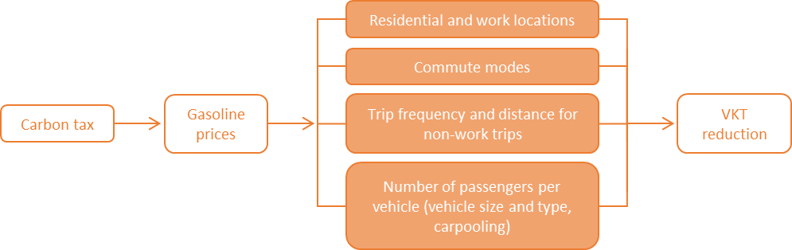
Note: Channels (in orange boxes) are shown to illustrate the economic theory; they are not modeled/estimated separately within CPAT.
The negative relationship between fuel prices and VKT is well established in the economics literature. The literature provides a large number of empirical estimates of the elasticity of VKT wrt fuel prices. Table 7.1 lists a selection of these estimates: most commonly, the estimates of VKT elasticity range from -0.05 to -0.50. A review paper found the mean estimate to be -0.10 in the short run and -0.29 in the long run (Goodwin, Dargay, and Hanly (2004)).
Some of these responses take time, so the long-run gasoline price elasticity of road deaths is likely to exceed the short-run elasticity. However, high fuel prices also push consumers to invest into more fuel-efficient vehicles, either buying cars that are more efficient or switching from cars to motorcycles (or other modes). In this case, the literature has extensively discussed the importance of the rebound effect, defined as efficiency induced consumption or, more plainly, the idea “buy a more fuel-efficient car, drive more” (Gillingham, Rapson, and Wagner (2016)). The rebound effect might cause long-run VKT elasticity to be lower than short-run VKT elasticity.
| Study | Country | Fuel price elasticity of road use | Note | |
|---|---|---|---|---|
| Short run | Long run | |||
| US | ||||
| Small and Van Dender (2007) | US | -0.05 | -0.22 | VKT elasticity. |
| Burger and Kaffine (2009) | US | -0.16 | VKT elasticity during peak congestion hours in Los Angeles. | |
| Bento, Hughes, and Kaffine (2013) | US | -0.05 | Roads without carpool lanes in Los Angeles. Elasticity is for number of trips. | |
| Gillingham (2014) | US | -0.22 | Vehicle-level data for California. Effect allows >1 years of response, but is not long-run. VKT elasticity. | |
| Gillingham, Jenn, and Azevedo (2015) | US | -0.10 | Vehicle-level data for Pennsylvania. VKT elasticity. | |
| Haughton and Sarkar (1996) | US | -.16 to -.07 | -.58 to -.21 | VKT elasticity at US state level. |
| Huang and Burris (2015) | US | -0.06 | Mean for a sample of toll roads. Elasticity is for number of trips. | |
| Other countries | ||||
| RAYMOND (2003) | Spain | -0.34 | -0.53 | Elasticity is for number of vehicle trips on toll roads. |
| Crôtte, Noland, and Graham (2009) | Mexico | -0.12 | VKT elasticity. | |
| Khoo, Ong, and Khoo (2012) | Malaysia | -0.16 | Uses road sensor data for 2008. | |
| Frondel, Ritter, and Vance (2012) | Germany | -0.458 | VKT elasticity. | |
| Delsaut (2014) | France | -0.14 | -0.28 | VKT elasticity. |
| Kwon and Lee (2014) | South Korea | -0.11 | Elasticity is for number of vehicle trips. | |
| Odeck and Johansen (2016) | Norway | -0.11 | -0.24 | VKT elasticity. |
Notes: Studies are chronologically ordered. Listed papers are a sample of prior studies. “Short run” and “long run” do not have the same definitions in all studies. Adapted from Burke, Batsuuri, and Yudhistira (2017) and Moshiri (2020).
7.3.2 Congestion
Congestion is the result of interaction between the limited vehicle capacity of a given facility and the demands for space by individual users. The costs of congestion occur in the form of excess travel time, increased expected damage and injury from accidents among vehicles, and additional vehicle operating costs for wear and fuel (Murphy and Delucchi (1997)).
The relationship of total VKT to congestion is straightforward (see Figure 7.2): the less vehicles on the road, the smaller the congestion problem (Sugiyama et al. (2008)). This theoretical relationship has been documented in the literature for decades (Johnson (1964)). When people share vehicles (carpooling) or substitute to public transport, the reduction in congestion may be achieved with constant total passenger-km (Bento, Hughes, and Kaffine (2013)).
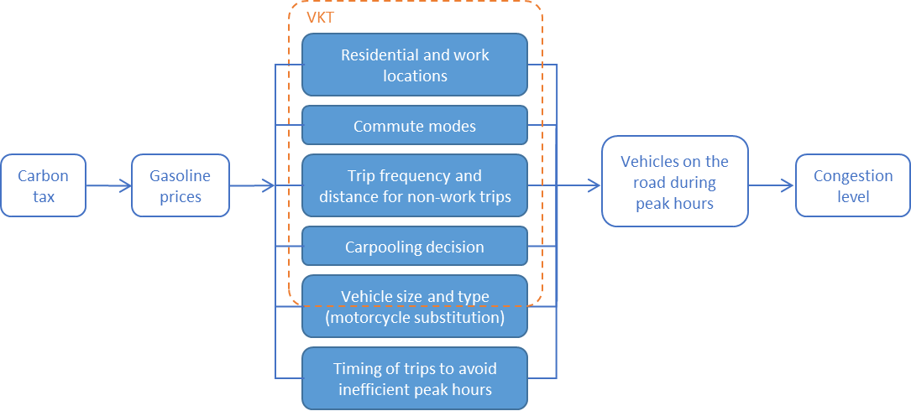
Notes: Channels (in blue boxes) are shown to illustrate the economic theory; they are not modeled/estimated separately within CPAT.
Empirically, congestion has been difficult to measure until very recently. Conventional measurement methods are costly, such as employing humans to count, establishing cameras or installing wires on the road. The resulting measurements only cover a limited number of precise locations and often only short periods of time. More recently, the development of mobile communication technology has allowed newer measures such as the congestion indicators of Waze, Google Maps, Inrix and TomTom. These GPS-based data cover larger areas over long periods of time and are highly disaggregated.
Given the limited/recent availability of congestion data, the empirical literature on the impact of fuel prices on congestion levels is relatively scarce. Burger and Kaffine (2009) find that a USD 1 increase in fuel prices reduces congestion and raises average freeway speeds by approximately 7% during rush-hour periods. They estimate short-run elasticity with a methodology similar to ours and find estimates ranging from -0.12 to -0.29. In an older study, Dahl (1979) finds an estimate of -0.35 for the elasticity of speed wrt fuel price. Cohen and Roth (2017) find that higher diesel prices lead to less but heavier trucks on the road, thereby reducing congestion.
Burke, Batsuuri, and Yudhistira (2017) examine the reaction to a fuel tax reform in Indonesia and find a fuel price elasticity of motor vehicle flows (number of vehicles on toll roads) between –0.1 and –0.2. They estimate that Indonesia’s fuel subsidy reforms of 2013 and 2014 have reduced traffic pressure by around 10%, relative to the counterfactual without reform.
The externality cost of congestion can be measured in monetary equivalent by multiplying time lost in traffic congestion by the value of travel time (Abrantes and Wardman (2011)).
7.3.3 Road accident fatalities
Road traffic injury is now the leading cause of death for children and young adults aged 5-29 years. It is the eighth leading cause of death for all age groups surpassing HIV/AIDS, tuberculosis and diarrheal diseases (World Health Organization (2018)).
Road accidents are a function of factors including road user behavior, road characteristics, vehicle characteristics, and the distances driven (vehicle-kilometers traveled, VKT) on roads by different types of drivers. Research has also shown that economic variables affect road accident risk exposure. Among these, fuel prices and key macroeconomic measures such as the unemployment rate have been the focus of prior studies rates (Ahangari et al. (2014); Gerdtham and Ruhm (2006); International Transport Forum (2015)). The negative effect of fuel prices on the risk of fatal accidents is well established in the literature.
For international comparisons, the literature considers data on fatalities more reliable than data on the number of accidents and number of injuries (Luoma and Sivak (2007); Sauerzapf, Jones, and Haynes (2010); World Health Organization and others (2013)). This is why most studies concentrate on deadly crashes, when trying to assess the relationship of fuel prices and road accidents. Chi et al. (2010) is a notable exception to this rule.
The relationship from fuel prices (and thus taxes) to accidents is multifactorial (see Figure 7.3), as shown in Chi, Porter, et al. (2013). Several aspects may be summarized to a principal channel which is VKT. Reduced driving decreases the exposure of both vehicle occupants and others to road crashes.
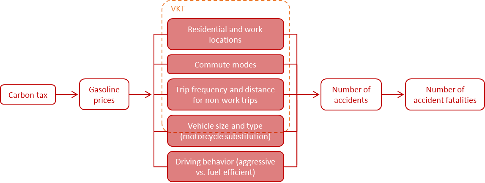
Note: Channels (in red boxes) are shown to illustrate the economic theory; they are not modeled/estimated separately within CPAT.
In addition to reducing VKT, higher gasoline prices might also lead to a reduction in road deaths per kilometer driven. One reason is that, to conserve fuel, drivers might reduce high-speed driving and so-called “aggressive driving” (high rates of acceleration and braking). Another reason is that high-risk drivers, including the young, the old, and those taking leisure-related trips, are particularly sensitive to gasoline prices (Morrisey and Grabowski (2011); Sivak (2009)). Higher gasoline prices also result in substitution from heavier to lighter, more fuel-efficient cars, which are associated with a lower overall number of road deaths per kilometer traveled (Gayer (2004); White (2004)). Substitution to bus travel may also reduce overall road safety risks.
However, through other channels higher gasoline prices might actually lead to more rather than fewer road deaths. Higher gasoline prices reduce congestion and thereby increase average speed (Burger and Kaffine (2009)), which increases the risk of fatal crashes. Fuel price-induced substitution to motorcycles, which are more fuel-efficient, may also cause additional road deaths (Hyatt et al. (2009); Wilson, Stimpson, and Hilsenrath (2009)). In particular, substitution to lighter cars and motorcycles would explain why long-run elasticities of accidents wrt fuel prices would be smaller in absolute magnitude than short-run elasticities.
Many studies in this field concentrate on the United States. Some authors argue that the effect of higher gasoline prices on road deaths operates via a reduction in VKT (Grabowski and Morrisey (2004)), whereas others report also a reduction in road deaths per VKT (Chi et al. (2010); Chi, Quddus, et al. (2013); Grabowski and Morrisey (2006); Haughton and Sarkar (1996); Montour (2011); Sivak (2009)). Sivak (2009) explains this reduction by the disproportionate reduction in leisure driving (riskier than commuter driving) and rural driving (more risky than urban driving).
Leigh and Wilkinson (1991) examine the relationship between gas price, gas tax, and road fatalities for all 50 states using a multiple regression framework. They find that a 1% increase in gas tax leads to a 0.18% to 0.20% reduction in road fatalities, but that gas prices are not statistically significant in explaining road fatalities. They use a different method, using cent-per-gallon rather than a log-log specification as does this study. A later study by Grabowski and Morrisey (2004), using 1983 to 2000 state-level data and a panel model to investigate the relationship between gas prices and road fatalities, finds that a 1% increase in gasoline prices reduces road fatalities by 0.23%. Looking only at Mississippi, Chi et al. (2010) finds a short-run elasticity of -0.25 and a long-run elasticity of -0.47. For Minnesota, Chi, Quddus, et al. (2013) find an elasticity of -0.219 for fatal crashes wrt to fuel prices and their estimates are higher in rural areas than in urban areas.
In an international study, Burke and Nishitateno (2015) find a 1% increase in the gasoline pump price would reduce road fatalities by 0.3% to 0.6%. Around 35,000 road deaths per year could be avoided by the removal of global fuel subsidies. Litman (2012) presents a scatterplot for 16 Organization for Economic Co-operation and Development (OECD) countries that shows a negative association between average gasoline prices and traffic fatality rates. Using a panel model of 16 industrialized countries, Ahangari et al. (2014) find an elasticity of -0.22 after controlling for VKT.
Other country-specific short-term elasticity estimates include -0.2 to -0.3 for New Zealand (Best and Burke (2019)) and -0.2 for Australia (Burke and Teame (2018)).
In a dynamic urban model, Avner, Rentschler, and Hallegatte (2014) examine the impact of carbon taxes on urban mobility and underline the lock-in effect from public transport investments: while the quality of urban transport infrastructure is difficult to capture quantitatively, we include data on satisfaction with public transport in our elasticity estimation to account for this effect.
7.3.4 Road damage
Road damage depends strongly on road usage (Jacobson and Wågberg (2005)), but not all vehicles affect road damage equally: wear and tear on the pavement is a rapidly rising function of a vehicle’s axle weight (Jacobson and Wågberg (2005); Murphy and Delucchi (1997); Parker and Hussain Ph D (2006); FHWA (2000)). Estimations suggest that the pavement wear and tear of one average five-axle truck equates to approximately 4,000 cars (Freight & Infrastructure (2014)). Therefore, nearly all of the vehicle-caused road damage is attributable to heavy-duty vehicles (trucks).
In most countries around the world,1 light-duty vehicles (cars) use gasoline and trucks use diesel. Road damage is thus more dependent on diesel price than on gasoline price.
The externality cost of road transport from pavement wear and tear has been discussed extensively in the economics literature, going back as far as Adam Smith (Lindsey (2006)). There is a consensus that diesel is strongly under-taxed, when comparing tax level to externality cost (Parry (2008); Santos (2017)).
Many authors have suggested addressing it directly through different forms of road pricing explicitly indexed on road damage cost (e.g. Newbery (1988); Parker and Hussain Ph D (2006); Santos et al. (2010)). From an economist’s point of view, addressing the externality explicitly, with taxes mirroring the externality cost directly, is the first best solution. However, as a carbon tax also increases diesel prices, it decreases truck VKT and thereby reduces road damage (Barla, Gilbert-Gonthier, and Kuelah (2014); ; Wadud (2016)). In general, a carbon tax reduces all road transport externalities that depend on VKT (Ekins (1996)).
The strength of this co-benefit depends on the elasticity of truck VKT with respect to fuel prices/taxes. There is large evidence that trucks reduce their VKT when fuel prices rise. Let us cite just a few recent studies finding significantly elastic VKT for trucks: Barla, Gilbert-Gonthier, and Kuelah (2014) find short and long-run price elasticities of -0.43 and -0.80 respectively; He (2015) estimates a VKT elasticity of -0.54; Ramli and Graham (2014) estimate short-run price elasticity between -0.11 and -0.16, long-run elasticity between -0.21 and -0.30 for trucks; Leard et al. (2015) find estimates around -0.20.
Some studies find that the elasticity depends on the type of trucks: Wadud (2016) finds that rigid trucks show statistically significant price elasticity, but articulated trucks do not respond to changes in fuel prices.
On the opposite, some authors find that trucks are relatively inelastic with regards to fuel prices (Winebrake et al. (2015)). One study finds that higher diesel prices are associated with fewer but heavier trucks, and therefore more road damage (Cohen and Roth (2017)).
In practice, two cost components to road damage may arise: the cost of repairing the pavement damage, and the additional cost to users, which result from traveling on damaged roadways. Given the difficulty to measure the second component, we concentrate on the first component in CPAT.
Methodologically, it is important to note that some countries earmark revenues from fuel taxes or road charges for road maintenance (Gultom et al. (2017)). In these countries, our estimation technique is not valid because of endogeneity, so that we exclude them.
Quantitatively, road damage may be considered the smallest of the three transport externalities considered here.
7.3.5 Within-country heterogeneity (by socio-demographic characteristics)
Regarding the within-country heterogeneity of the effect of fuel price on VKT, the literature has not reached a consensus. Within countries, Bastian and Borjesson (2014) find that urban populations, in particular those with low incomes, respond stronger to fuel price increases and economic downturn, i.e. are reducing car travel more. Similarly, many studies find that (absolute) elasticity diminishes with higher income levels (Santos and Catchesides (2005); Small and Van Dender (2007); West (2017)). On the opposite, Wang and Chen (2014) find that higher income households show greater fuel price elasticity than lower income households.
Regarding the effect of fuel prices on accident fatalities, the literature suggest that the poor are more often victims of road accidents because of the vehicles they travel in. There is evidence that larger vehicles (in particular light trucks and SUVs) cause more fatalities than light passenger vehicles, while drivers of SUVs are relatively more protected: (White (2004)) calls this disequilibrium “the ‘Arms race’ on American roads”. The highest risk is borne by motorcyclists who tend to have lower incomes than four-wheeled vehicle drivers (Hyatt et al. (2009)). A particular group at high risk for road death are young drivers (aged 15–24) and their passengers. As these drivers are more sensitive to fuel prices, the young drivers accident rate responds particularly strongly to fuel price increases (Morrisey and Grabowski (2011)). One of the few studies looking at gender and race, Chi et al. (2010) find that fuel prices affect accident rates similarly for men and women, as well as for white and black population.
7.3.6 Between-country heterogeneity
Regarding the between-country heterogeneity of the effect of fuel prices on VKT, most estimates concentrate on developed countries, in particular the USA. Studies on developing countries often face data challenges, but so far the literature suggests that the elasticities lay within the same order of magnitude in developed and developing countries (Gillingham, Rapson, and Wagner (2016)).
Regarding the effect of fuel prices on accident fatalities, some studies look at differences between high- and low-income countries, but the literature on within-country determinants of road fatalities and their elasticity wrt to fuel prices is scarce. Data is notoriously more scarce in developing countries. Country-level panel data identification strategies such as used in Burke and Nishitateno (2015) typically yield one elasticity for all countries. A priori, the effect is unclear: wealthier individuals travel larger distances and thus have a higher risk of traffic accidents, but poorer individuals travel more on foot and on motorcycles, which increases their risk to die from a road accident.
7.3.7 Fuel prices vs. taxes
Most of the above mentioned literature examines the effect of fuel prices on the various outcomes discussed. However, for CPAT we are interested in the effect of a carbon tax.
Regarding the effect on VKT, Li, Linn, and Muehlegger (2014) show that gasoline consumption responds more strongly to gasoline taxes than to gasoline prices. They explain that consumers may respond more to taxes than equal-sized changes in tax-inclusive gasoline prices because of perceived persistence and salience. Variation in gasoline taxes also is covered much more intensively in the media.
Regarding road fatalities, Leigh and Wilkinson (1991) show that gasoline taxes have a significant effect on fatalities while the effect of price effect from oil market fluctuations is not significant. However, these findings are on a cents-per-liter basis rather than a percent basis, so they are not directly comparable to our results.
7.3.8 Methodology
Literature generally finds that the short-term elasticity of fuel use is weaker than the long-term elasticity wrt fuel prices (Chi et al. (2010)). Usually, researchers explain this finding by structural adjustments to the vehicle fleet, travel demand (work and residence locations) and infrastructure. Hence, there has been some methodological effort to estimate short-run and long-run elasticities separately.
The methodology for elasticity estimation in the Road Transport Module is similar to Burke and Nishitateno (2015). Using country-year-level data, the main estimations are fixed effects and between estimators of a linear log-log equation. The between estimator uses average data for each country and provides estimates of long-run effects (Badi Hani Baltagi and Baltagi (2008); Badi H. Baltagi and Griffin (1984); Pesaran and Smith (1995); Pirotte (1999); Stern (2010)). Fixed-effects estimations control for time-invariant factors such as the extent of mountainous terrain, but when a static fixed-effects equation is estimated the coefficients represent short-run effects. This method has been widely used in the literature looking at the effect of fuel prices on road safety (Best and Burke (2019); Burke and Nishitateno (2015); Grabowski and Morrisey (2006); Montour, 2011). An alternative way of estimating long-run elasticities is the distributed lag specification (Burke and Nishitateno (2015); Chi, Porter, et al. (2013); Montour (2011)).
Other studies, e.g. Chi, Quddus, et al. (2013), use more time-series related methods, in particular testing for unit roots and accounting for stationarity. These methods are difficult to implement with unbalanced panels, as in our case. However, in his standard econometrics textbook (Badi Hani Baltagi and Baltagi (2008); Badi H. Baltagi and Griffin (1984)) considers that time-series methods should apply when T (the number of periods) is large and N (the number of countries) is small, whereas panel data methods like the between estimator are appropriate when T small and N large: “Using panel data, one can avoid the problem of spurious regression\(…\) Unlike the single time series spurious regression literature, the panel data spurious regression estimates give a consistent estimate of the true value of the parameter as both N and T tend to \(\infty\). This is because, the panel estimator averages across individuals and the information in the independent cross-section data in the panel leads to a stronger overall signal than the pure time series case.”
7.4 Data sources
7.4.1 General
We use a panel dataset of country-year-level data, including as many countries and years as available, resulting in an unbalanced panel. The dataset covers the time from 1994 to 2021 and 186 countries around the world.
The main data source are the World Road Statistics (WRS), regularly published by the International Road Foundation (International Road Federation (2018)). We use data from its editions 2001 to 2021, covering the years 1995 to 2019.
Aside many of our covariates, WRS also contains two of our outcomes of interest: we use total distance driven in vehicle-kilometers traveled (VKT) and road damage, as measured by infrastructure maintenance investment.
General demographic and macroeconomic variables are provided by the World Bank’s World Development Indicators (WDI) database.2 The World Bank’s World Governance Indicators (WGI) database3 gives indicator measures of corruption and rule of law.
The online database for Sustainable Development Report (SDR) 20194 (Sachs et al. (2019)) gives an indicator of the quality of public transport.
Weather information at the country-year level is provided by the Climatic Research Unit (CRU) of the University of East Anglia, downloadable via the World Bank’s Climate Change Knowledge Portal (CCKP).5 We use the precipitation (in mm), the minimum temperature (in °C), the number of hot days (Tmax>40°C), and the number of ice days (Tmax<0°C).
All monetary variables are deflated to 2018 USD using the World Bank’s US GDP deflator and adjusted for purchasing power parity (WDI).
An exhaustive list of variables with their sources can be found in Section 7.10.1.
7.4.2 Congestion
Traffic congestion is measured using the TomTom Traffic Index. This index covers over 400 cities across 61 countries. The TomTom Traffic index statistics are calculated from anonymized GPS data collected via navigation devices, in-dashboard systems and smartphones.
The congestion level percentages represent the measured amount of extra travel time experienced by drivers across the entire year. As a first step, TomTom establishes a baseline of travel times during uncongested, free flow conditions across each road segment in each city. They then analyze travel times across the entire year for each city. The TomTom Traffic Index then represents the difference between observed travel times and free flow travel time.
For example, an overall congestion level of 36% means that the extra travel time is 36% more than an average trip would take during uncongested conditions. Average times are of actual taken trips, across every vehicle in the entire network, 24/7. Travel times in free-flow (uncongested) conditions are not based on legal speed limits but on actual trips made.
The TomTom Traffic Index is available both overall, as well as for specific weekdays and peak times, including morning and evening peak hours.
7.4.3 Road safety
The United Nations Economic Commission for Europe (UNECE)6 and the Organization for Economic Co-operation and Development (OECD)7 provide statistical databases, used to complete missing data points in the WRS, in particular for accident fatalities.
The World Health Organization (WHO) publishes reports on Road Safety. We use the 2013 edition with data on 2011 (World Health Organization and others (2013)) and the 2018 edition with data on 2017 (World Health Organization (2018)), which include detailed covariates on the legal framework of traffic, such as seat belt wearing rate, blood alcohol concentration limit, helmet enforcement and others.8
For Côte d’Ivoire and Mexico, country-specific projects made more detailed accident data available, which are included in the general CPAT analysis. Missing data for Côte d’Ivoire in WRS are completed using the national accident statistics provided by the Ivorian Ministry of Transport. Unrealistically low accident numbers for Mexico in WRS are replaced by data from the Mexican National Institute of Statistics and Geography (INEGI) and the Mexican Transport Institute (IMT).
7.4.4 Fuel prices
Fuel prices are taken from the fuel price database of the overall CPAT project. For road fuels, the sources used are the IMF’s Fiscal Affairs Department (FAD), Enerdata’s Global Energy and CO2 Data, IEA’s Data and statistics and GIZ’s Sustainable Urban Transport Project.
In combining these different data sources, the following order of steps is applied:
If Enerdata, IEA and IMF data is available, we establish a weighted average of price data in Enerdata (60%), IEA (10%) and IMF (30%);
if IMF or IEA are missing, we use Enerdata;
If Enerdata is missing, we use the information in the IMF database;
If IMF is missing, we use the information in the IEA database;
If IEA is missing, we use the information in the GIZ database.
Aside the final retail price at the pump, we use data on taxes summarizing VAT, existing carbon taxes, excise tax and others. We use the same algorithm as described above for prices to construct time series of fuel taxes. Supply cost is defined as the difference of price at the pump minus taxes.
7.4.5 Externality costs
The benefits of prevented mortalities can be expressed in terms of a “Value of a Statistical Life” (VSL), which represents the value a given population places ex ante on avoiding the death of an unidentified individual. VSL is based on the sum of money each individual is prepared to pay for a given reduction in the risk of premature death, for example from diseases linked to air pollution OECD (2012).
The country-specific VSL in CPAT is adapted from OECD (2012), adjusted for GDP growth and inflation (within the Air Pollution Module).
We compute the average speed from TomTom’s total VKT and total travel time. We then compute the VKT per capita from WRS’ national VKT divided by the population size from the WB’s World Development Indicators (WDI). This average VKT per capita is multiplied by the size of urban population over 15 year of age (WDI) and divided by the average speed, yielding total urban travel time.
The total urban travel time is then multiplied by 80% of the average hourly after-tax wages (from Air Pollution Module), yielding the value of travel time.
7.4.6 Data cleaning
Several variables result of the combination of several data sources. For example, we combine information on accident fatalities from WRS, OECD and UNECE. In these cases, we define a clear order and only “fill up” missing variables with the second and third source.
After establishing this mix of data sources, a visual control of country-specific time series is performed to identify outliers. For each visually identified outlier, we perform thorough background checks and in case of doubt only keep one source (resulting in some limited data loss).
Stock variables such as length of road network, country area or size of population are interpolated linearly when missing between years with non-missing data for that country. However, we do not extrapolate beyond the last/first year with non-missing data. The variable table in Section 7.10.1 indicates for which variables such interpolation is performed.
7.5 Methods for elasticity estimation
This chapter explains the general methodology for estimating short- and long-run elasticities and making them country-specific in a data-parsimonious way. This methodology is then applied to VKT and the three outcomes of interest: congestion, road damage and fatalities from road accidents.
7.5.1 Estimation equation
We regress the logarithm of the outcome variable onto a constant, the logarithm of fuel prices, a list of covariates and fixed effects. The general form of the estimated regression estimation is
\[\ln\left( Y_{\text{ct}} \right) = \alpha + \beta\ln\left( p_{\text{ct}} \right) + \gamma\ X_{\text{ct}} + \mu_{t} + \mu_{c} + \epsilon_{\text{ct}} \tag{7.1}\]
Where \(\ln\left( Y_{\text{ct}} \right)\) is the natural logarithm of the outcome in country \(c\) in year \(t\), \(\ln{(p_{\text{ct}})}\) is the natural logarithm of pump price for gasoline, \(X_{\text{ct}}\) is a vector of covariates including income per capita and population density, and \(\mu_{c}\) and \(\mu_{t}\) are country- and year-specific effects.
An elasticity measures how much an outcome changes relatively to its initial value (e.g. in percent) when another variable, here the pump price of gasoline, changes (in percent). As we are using the log-log specification, the coefficient estimate \(\widehat{\beta}\) in Equation 7.1 is an estimate of the elasticity of the outcome \(Y_{\text{ct}}\) with respect to (wrt) fuel prices \(p_{\text{ct}}\).
7.5.2 Short-run and long-run estimators
Following Burke and Nishitateno (2015), we consider that the within estimator from a static fixed-effects equation represents shorter-run effects, and the between estimator provides estimates of long-run effects (Badi Hani Baltagi and Baltagi (2008); Badi H. Baltagi and Griffin (1984); Pesaran and Smith (1995); Pirotte (1999); Stern (2010)).9
For simplicity, let us reduce the notation of the previous equation (Equation 7.1) to:
\[y_{\text{ct}} = \alpha + \beta x_{\text{ct}} + \mu_{c} + \epsilon_{\text{ct}} \tag{7.2}\]
Where the logarithms have been omitted and all righthand-side variables summarized under the vector \(x_{\text{ct}}\).
The interpretation for the long and short run is based on the idea that the previous Equation 7.2 may alternatively be formulated:
\[y_{\text{ct}} = \alpha + \beta'{\overline{x}}_{c} + \beta''(x_{\text{ct}} - {\overline{x}}_{c}) + \mu_{c} + \epsilon_{\text{ct}} \tag{7.3}\]
Where \({\overline{x}}_{c}\) is the average of \(x_{\text{ct}}\) over time: \({\overline{x}}_{c} = \sum_{t}^{}{x_{\text{ct}}/T_{c}}\), where \(T_{c}\) is the number of years included for country \(c\) in the regression.
In the model described by Equation 7.3, we postulate that changes in the average value of \(x_{\text{ct}}\) for an individual country may have a different effect from temporary departures from the average. The model allows a different response to permanent rather than transitory changes. If \(\beta' = \beta''\), then the model in Equation 7.3 collapses into the previous model in Equation 7.2.
Whatever the properties of \(\mu_{c}\) and \(\epsilon_{\text{ct}}\), if Equation 7.2 is true, we can take the averages and find that:
\[{\overline{y}}_{c} = \alpha + \beta'{\overline{x}}_{c} + \mu_{c} + {\overline{\epsilon}}_{c} \tag{7.4}\]
where \({\overline{y}}_{c}\) is the average of \(y_{\text{ct}}\) over time: \({\overline{y}}_{c} = \sum_{t}^{}{y_{\text{ct}}/T_{c}}\) and \({\overline{\epsilon}}_{c}\) is the average of the error term: \({\overline{\epsilon}}_{c} = \sum_{t}^{}{\epsilon_{\text{ct}}/T_{c}}\).
Subtracting Equation 7.4 from Equation 7.3, it must also be true that:
\[{y_{\text{ct}} - \overline{y}}_{c} = \beta''{(x_{\text{ct}} - \overline{x}}_{c}) + (\epsilon_{\text{ct}} - {\overline{\epsilon}}_{c}) \tag{7.5}\]
These equations are known from panel econometrics textbooks: Equation 7.4 describes the between estimator and Equation 7.5 describes the within estimator, also known as fixed-effects estimator.
Fixed-effects estimations control for time-invariant characteristics of countries such as the extent of size or mountainous terrain. As illustrated in Equation 7.5, the identifying variation comes from within-country deviations from the country-mean. Given standard assumptions on the error term \(\epsilon_{\text{ct}}\) (mean\(\ 0\), uncorrelated with itself, uncorrelated with \(x_{\text{ct}}\), uncorrelated with \(\mu_{c}\), and homoscedastic), the within estimator can be estimated as an OLS on Equation 7.5 or, equivalently, an OLS on Equation 7.1 including country dummy variables. For this study, this equation is estimated using the Stata command xtreg, fe.
The between estimator is given by the OLS estimator on Equation 7.4. This specification cancels out time-differences. The between estimates are based on cross-sectional country differences. Individual-invariant regressors such as time dummies cannot be identified. For this project, this equation is estimated using the Stata command xtreg, be.10
7.5.3 Covariates
The choice of the variables used as covariates \(X_{\text{ct}}\) follows the list of variables used in World Health Organization (2018). A detailed list can be found in Section 7.10.1.
7.5.4 Country-specific elasticity estimates
The effect of fuel prices on our three outcomes of interest is likely to be heterogeneous across different countries. However, there is limited data available for most countries, so that unparametrically country-specific estimations proved not feasible. We discard to option to create ad hoc regional groups and estimate group-specific elasticities, as we want a more data-driven methodology. To strike a balance between accounting for heterogeneity and using available data parsimoniously, we estimate elasticities that are linear expressions of several covariates.
The estimation includes interaction terms between fuel prices and the additional variables. For example, if elasticity depends on two more variables, the estimation equation is:
\[\ln\left( Y_{\text{ct}} \right) = \alpha + \beta_{0}\ln{(p_{\text{ct}})} + \beta_{1}v_{\text{ct}}^{1}\ln{(p_{\text{ct}})} + \beta_{2}v_{\text{ct}}^{2}\ln{(p_{\text{ct}})} + \gamma\ X_{\text{ct}} + \mu_{c} + \ \mu_{t} + \epsilon_{\text{ct}} \tag{7.6}\]
where the variables are the same as before, and\(\ v_{\text{ct}}^{1}\) is the first additional variable influencing elasticity and \(v_{\text{ct}}^{2}\) is the second additional variable influencing elasticity. The “country-specific” elasticity estimated is then:
\[{\widehat{\beta}}_{c} = {\widehat{\beta}}_{0} + {\widehat{\beta}}_{1}\overline{v_{c}^{1}} + {\widehat{\beta}}_{2}\overline{v_{c}^{2}} \tag{7.7}\]
where \(\overline{v_{c}^{1}}\) is the average across recent years11 of variable \(v_{\text{ct}}^{1}\) for country \(c\) (and analogously for variable \(\overline{v_{c}^{2}}\)). In practice, we include not two but five additional variables \(v_{\text{ct}}^{k}\), which we omit here for readability.
We consider 15 candidate variables linked to traffic conditions, demographics and availability of substitutes to private vehicles. The final estimations include only the variables found to be empirically most important.
The selection of covariates \(v_{\text{ct}}^{k}\) included in the expressions of elasticities is data-driven using a lasso regression as implemented in Stata command lasso2 (Ahrens, Hansen, and Schaffer (2020)). The lasso procedure penalizes additional variables/parameters and thereby encourages simple, sparse models, i.e. models with fewer parameters. The algorithm sequentially includes one variable after the other, in an optimized order. The order in which predictors are entered into the model can be interpreted as an indication of the relative predictive power of each predictor.
7.5.5 Fuel prices or taxes
We are interested in the effect of carbon taxes on accidents. The most classical way of estimating tax impact consists in estimating price elasticity from exogenous price variation. However, some of the literature states that consumers might not react identically to price changes and to tax changes (salience, anticipation of persistence over time).
Therefore, we estimate two sets of elasticities: elasticities wrt fuel prices and wrt fuel taxes. The estimation for elasticity wrt to prices follows the equations above. The estimations for elasticity wrt to taxes include the natural logarithms of both tax-exclusive prices and taxes as two separate variables. The elasticity of interest is then the estimated coefficient of the tax variable. Fuel tax data is only available for a limited amount of countries.
7.6 Elasticity results
For readability, this note includes shortened results tables. For the full results, please refer to the Tran_Elas sheet of CPAT.
7.6.1 Congestion
Figure 7.4 shows descriptive evidence of the relationship between urban congestion and gasoline prices: across countries, there is a significant negative correlation in 2018.12 Congestion is measured with the TomTom Traffic Index, indicating the additional time spent in congested traffic as compared to free-flowing traffic (in percent, see Section 7.4.2 for more details).
This simple descriptive evidence omits many variables. In particular, the elasticity of demand of private vehicle trips depends on the availability of (and practicability) alternative means of transport. Moreover the resulting congestion depends on whether these alternative means of transport will also be on the road (e.g. buses) or elsewhere (e.g. trains).
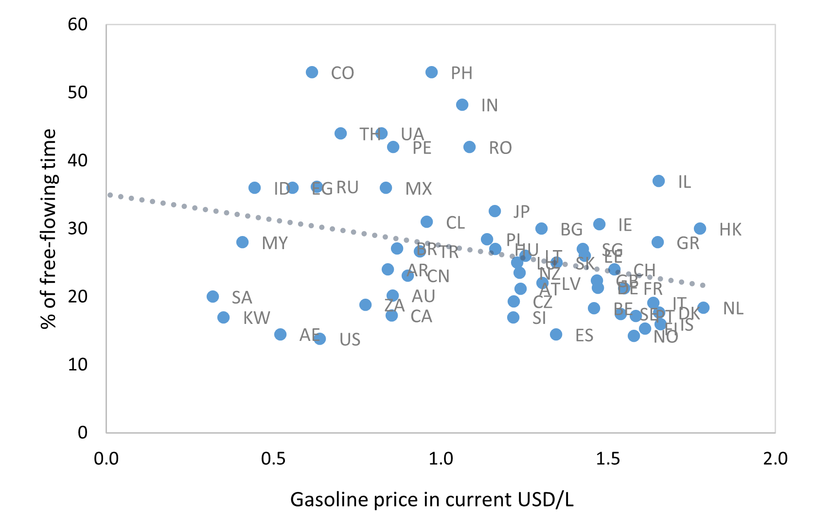
Source: Tomtom, Enerdata, EIU, IEA, own computations.
7.6.1.1 Short-run elasticity
This section shows the results for the short-run estimations of congestion on fuel prices and a list of covariates. The most relevant specification \(i\) the within estimator of Equation 7.1, as specified in Equation 7.5.
For simplicity, we only show the regression results for overall congestion, whereas CPAT also contains estimates for weekday congestion and weekday peak time congestion. The results on these three indicators are similar, but the effect on peak congestion is typically slightly stronger.
| Urban congestion | (1) | (2) | (4) | (3) | (5) | (6) |
|---|---|---|---|---|---|---|
| pooled OLS | within estimator | |||||
| Ln of gasoline pump price (2018 PPP-adj USD cents/liter) | 0.0189 | -0.0776* | -0.335** | -0.149*** | -0.288*** | -0.503*** |
| (0.584) | (0.0799) | (0.0382) | (0.000620) | (6.12e-10) | (0.00171) | |
| Interaction ln(gasoline) w/ Ln of number of vehicles per capita | 0.312** | 0.294** | ||||
| (0.0153) | (0.0454) | |||||
| Interaction ln(gasoline) w/ Precipitation (in mm) | 0.207*** | 0.103** | ||||
| (2.05e-05) | (0.0107) | |||||
| Interaction ln(gasoline) w/ Satisfaction with public transport (%) | -0.0106 | -0.0322*** | ||||
| (0.667) | (0.00398) | |||||
| Interaction ln(gasoline) w/ Share of paved roads (in %) | -0.0477* | -0.116 | ||||
| (0.0555) | (0.239) | |||||
| Interaction ln(gasoline) w/ Ln of population | 0.171*** | 0.0536 | ||||
| (0.00205) | (0.439) | |||||
| Covariates | No | Yes | Yes | No | Yes | Yes |
| Fixed effects | No | No | No | Yes | Yes | Yes |
| Interaction terms | No | No | Yes | No | No | Yes |
| Observations | 583 | 467 | 467 | 583 | 467 | 467 |
| R-squared | 0.287 | 0.495 | 0.550 | 0.214 | 0.384 | 0.415 |
| Number of countries | 61 | 52 | 52 | |||
Robust p-values in parentheses, *** p<0.01, ** p<0.05, * p<0.1. Ln(gasoline) is the natural logarithm of the gasoline pump price (2018 PPP_adjusted USD cents/liter). The parameter marked in green is the default short-run elasticity in CPAT for countries that have not sufficient data for country-specific elasticity estimation. Sample averages are subtracted from the interaction variables prior to interacting with the fuel price.
Table 7.2 shows results of the pooled OLS (column 1-3) and within estimator (column 4-6). For each estimator, we compute the coefficient first without and then with covariates included. All of the estimates lie within a similar order of magnitude: the short-run elasticity of congestion wrt fuel price is estimated between -0.08 and -0.29. This is very close to the estimates ranging from -0.12 to -0.29 in Burger and Kaffine (2009) and more inelastic than the estimate of -0.35 in Dahl (1979).
The columns 4 and 6 show the results of including additional interaction terms between the fuel price and selected variables. The coefficient of the fuel price is not directly interpretable in this specification. In order to obtain country-specific elasticity estimates, one needs to multiply the coefficients with the country-specific values of the covariates. The results are given below in Section 7.6.1.3.
7.6.1.2 Long-run elasticity
Computing the between estimator of Equation 7.1, given by Equation 7.4, we obtain the long-run elasticity.
| Urban congestion | (1) | (2) | (4) |
|---|---|---|---|
| between estimator | |||
| Ln of gasoline pump price (2018 PPP-adj USD cents/liter) | -0.125*** | -0.364*** | -0.707 |
| (0.00436) | (2.07e-08) | (0.214) | |
| Interaction ln(gasoline) w/ Maximum speed on urban roads (in km/h) | 0.260 | ||
| (0.129) | |||
| Interaction ln(gasoline) w/ Precipitation (in mm) | 0.0821 | ||
| (0.421) | |||
| Interaction ln(gasoline) w/ Seat-belt wearing rate (%) | -0.105 | ||
| (0.326) | |||
| Interaction lnsuper w/ Infant mortality rate (per 1,000 live births) | -0.906** | ||
| (0.0394) | |||
| Interaction ln(gasoline) w/ Ln of population | -0.0210 | ||
| (0.934) | |||
| Covariates | No | Yes | Yes |
| Interaction terms | No | No | Yes |
| Observations | 583 | 467 | 467 |
| R-squared | 0.786 | ||
| Number of countries | 61 | 52 | 52 |
Robust p-values in parentheses, *** p<0.01, ** p<0.05, * p<0.1. Ln(gasoline) is the natural logarithm of the gasoline pump price (2018 PPP_adjusted USD cents/liter). The parameter marked in green is the default long-run elasticity in CPAT for countries that have not sufficient data for country-specific elasticity estimation. Sample averages are subtracted from the interaction variables prior to interacting with the fuel price.
Again, the first two columns of Table 7.3 show the estimates first without and then with covariates included into the regression. The third column shows the results of including the interaction of fuel price with the empirically relevant covariates, which are not directly interpretable and will be discussed in the next subsection.
7.6.1.3 Country-specific elasticities
Table 7.2 and Table 7.3 show the results of regressing congestion on fuel prices and covariates, estimating the short-run (within estimator) and long-run (between estimator) elasticities. The parameters of the last column of each table give the results of including interaction terms with relevant covariates, as described by Equation 7.6. The most relevant interaction terms are chosen using lasso regressions (see Section 7.3.8 for methodology).
While using fuel price data for estimating elasticity is standard in the literature, some authors have suggested that consumers react more strongly to changes in fuel taxes than to (equivalent) changes in fuel prices. This hypothesis typically relies on additional salience of taxes, which are often strongly featured in the media, and on expectations about the persistence of the price change into the future.
Therefore, we repeat the same estimations of Table 7.2 and Table 7.3 using fuel supply cost and fuel taxes as two separate variables, rather than overall fuel price at the pump. Detailed results are omitted here, but can be found in the MS Excel file appendix to this report.
As a result, we have four elasticity estimates for each country: short-run and long-run, each wrt prices and wrt taxes.
Table 7.4 shows the lists of variables which are selected by the lasso regression algorithm as the five most relevant covariates for fuel price elasticity of congestion. The elasticities depend on characteristics of the vehicle fleet (number of vehicles per capita, share of motorcycles), on characteristics of the road network (density, speed limits), characteristics of transport substitutes (satisfaction with public transport) and on more general features of society (population size, rule of law indicator, urbanization, share of young people, and others).
| Short run | Long run | ||
|---|---|---|---|
| wrt price | wrt tax | wrt price | wrt tax |
| Ln of number of vehicles per capita | Number of vehicles per capita | Maximum speed on urban roads (in km/h) | Maximum speed on urban roads (in km/h) |
| Satisfaction with public transport (%) | Satisfaction with public transport (%) | Ln of population | Ln of population |
| Share of paved roads (in %) | Share of urban population (in %) | Infant mortality rate (per 1,000 live births) | Infant mortality rate (per 1,000 live births) |
| Ln of population | Seat-belt wearing rate (%) | Seat-belt wearing rate (%) | Satisfaction with public transport (%) |
| Precipitation (in mm) | Maximum speed on urban roads (in km/h) | Precipitation (in mm) | Road density (in km per km2) |
Notes: The covariates used for estimating the country-specific elasticities are chosen by a data-driven machine learning algorithm among a list of 30 candidate variables.
Given the large number of countries and variants, the elasticities are not reproduced here. The detailed numbers can be found in CPAT or in the MS Excel appendix to this report.
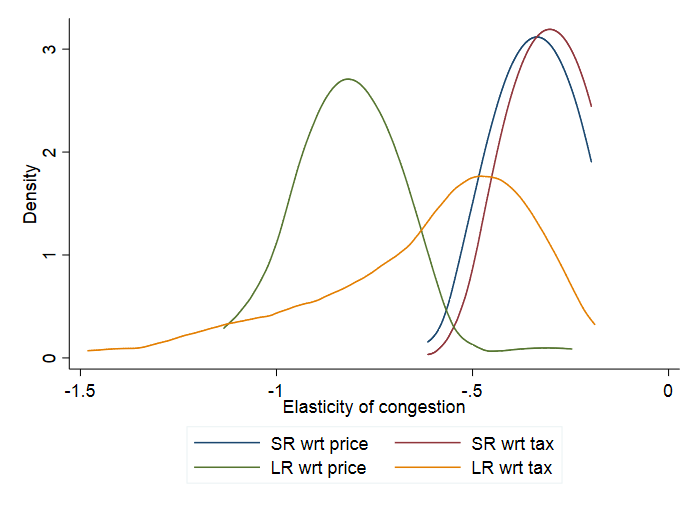
Figure 7.5 shows the kernel densities13 of the congestion elasticity estimates in the short and the long-run, wrt fuel price and wrt fuel tax. One can see that congestion is more elastic to fuel prices in the long run than in the short run. This is a classical result, as consumers have the possibility to adjust more in the long run than in the short run.
Table 7.5 summarizes the key characteristics of the distributions shown in Figure 7.5: mean, median, 5th and 95th percentiles of the distribution.
| Urban congestion | Short-run | Long-run | ||
|---|---|---|---|---|
| wrt price | wrt tax | wrt price | wrt tax | |
| Default elasticity | -0.288 | -0.118 | -0.364 | -0.119 |
| Mean | -0.339 | -0.305 | -0.807 | -0.612 |
| Median | -0.340 | -0.296 | -0.798 | -0.531 |
| 5th percentile | -0.433 | -0.381 | -1.001 | -1.127 |
| 95th percentile | -0.242 | -0.229 | -0.667 | -0.294 |
| Number of estimates | 158 | 151 | 174 | 154 |
7.6.2 Fatalities from road accidents
For illustration, Figure 7.6 shows descriptive evidence of the negative correlation between fuel prices and road accident fatalities. The higher the gasoline price the lower the accident fatality rate per 100,000 inhabitants.
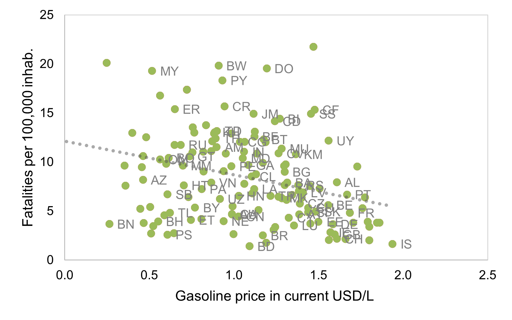
Source: WRS, Enerdata, EIU, IEA, own computations.
7.6.2.1 Short-run elasticity
This section shows the results for the short-run estimations of road accident fatalities on fuel prices and a list of covariates, following the general form of Equation 7.1.
| Accident fatalities | (1) | (2) | (4) | (3) | (5) | (6) |
|---|---|---|---|---|---|---|
| pooled OLS | within estimator | |||||
| Ln of gasoline pump price (2018 PPP-adj USD cents/liter) | -0.113*** | -0.112*** | -0.211*** | -0.143*** | -0.168*** | -0.366*** |
| (1.41e-07) | (0.00123) | (5.58e-06) | (0) | (1.86e-07) | (0) | |
| Interaction ln(gasoline) w/ Road density (in km per km2) | 0.324** | -0.533*** | ||||
| (0.0333) | (0.000228) | |||||
| Interaction ln(gasoline) w/ Population share of 15 to 24 years-old (in %) | -0.174*** | 0.131*** | ||||
| (2.78e-07) | (2.13e-05) | |||||
| Interaction ln(gasoline) w/ Seat-belt wearing rate (%) | -0.0766*** | 0.0122 | ||||
| (2.12e-09) | (0.241) | |||||
| Interaction ln(gasoline) w/ Satisfaction with public transport (%) | -0.0766*** | -0.0111 | ||||
| (1.06e-10) | (0.138) | |||||
| Interaction ln(gasoline) w/ Number of vehicles per capita | -0.241*** | -0.127*** | ||||
| (1.14e-08) | (0.00171) | |||||
| Covariates | No | Yes | Yes | No | Yes | Yes |
| Fixed effects | No | No | No | Yes | Yes | Yes |
| Interaction terms | No | No | Yes | No | No | Yes |
| Observations | 3,240 | 2,035 | 1,874 | 1,953 | 3,240 | 2,035 |
| R-squared | 0.869 | 0.905 | 0.930 | 0.907 | 0.202 | 0.287 |
| Number of country FE | 170 | 138 | 121 | |||
Robust p-values in parentheses, *** p<0.01, ** p<0.05, * p<0.1. Ln(gasoline) is the natural logarithm of the gasoline pump price (2018 PPP_adjusted USD cents/liter). The parameter marked in green is the default short-run elasticity in CPAT for countries that have not sufficient data for country-specific elasticity estimation. Sample averages are subtracted from the interaction variables prior to interacting with the fuel price.
The estimates for the short-run elasticity of accidents wrt fuel prices lie between -0.11 and -0.168 (Table 7.6, columns 1, 2, 4 and 5). Our estimates are similar to the short-run estimate of (Burke and Nishitateno (2015)) with -0.10. The columns 3 and 6 include the interaction terms and are not directly interpretable; the resulting country-specific elasticities are discussed in Section 7.6.2.3.
7.6.2.2 Long-run elasticity
| Accident fatalities | (1) | (2) | (3) |
|---|---|---|---|
| between estimator | |||
| Ln of gasoline pump price (2018 PPP-adj USD cents/liter) | -0.214** | -0.192*** | 0.123 |
| (0.0322) | (2.18e-09) | (0.432) | |
| Interaction ln(gasoline) w/ Ln of number of vehicles per capita | -0.150 | ||
| (0.438) | |||
| Interaction ln(gasoline) w/ Alcohol, recorded per capita (15+) consumption (in litres | 0.179 | ||
| (0.210) | |||
| Interaction ln(gasoline) w/ Number of motorcycles per capita | 0.0909 | ||
| (0.461) | |||
| Interaction ln(gasoline) w/ GDP per capita (in 2018 PPP-adj USD) | 0.0124 | ||
| (0.936) | |||
| Interaction ln(gasoline) w/ Share of urban population (in %) | 0.0690 | ||
| (0.465) | |||
| Covariates | No | Yes | Yes |
| Interaction terms | No | No | Yes |
| Observations | 3,240 | 2,035 | 2,035 |
| R-squared | 0.880 | 0.900 | 0.919 |
| Number of countries | 170 | 138 | |
Robust p-values in parentheses, *** p<0.01, ** p<0.05, * p<0.1. Ln(gasoline) is the natural logarithm of the gasoline pump price (2018 PPP_adjusted USD cents/liter). The parameter marked in green is the default long-run elasticity in CPAT for countries that have not sufficient data for country-specific elasticity estimation. Sample averages are subtracted from the interaction variables prior to interacting with the fuel price.
The long-run elasticity estimates in Table 7.7 lie between -0.19 and -0.21 (column 1 and 2). This is less elastic than the estimates of (Burke and Nishitateno (2015)) with -0.30 to -0.60. The third column cannot be directly interepreted and is discussed in the following subsection.
7.6.2.3 Country-specific elasticities
Table 7.8 shows the lists of variables which are selected by the lasso regression algorithm as the five most relevant covariates for the elasticity of accident fatalities, chosen by a data-driven algorithm. Again, the elasticities depend on characteristics of the vehicle fleet, on characteristics of the road network and on more general features of society. In particular, motorcyclist are known to be at particularly high risk for accident injury and death. Classical road safety features such as seat-belt wearing rate, alcohol consumption and maximum speed allowed also play a role. More broadly, GDP and infant mortality rate capture the general development situation of the country, as well as the quality of the country’s health system.
| Short run | Long run | ||
|---|---|---|---|
| wrt price | wrt tax | wrt price | wrt tax |
| Number of vehicles per capita | Ln of number of vehicles per capita | GDP per capita (in 2018 PPP-adj USD) | GDP per capita (in 2018 PPP-adj USD) |
| Population share of 15 to 24 years-old (in %) | Population share of 15 to 24 years-old (in %) | Alcohol, recorded per capita (15+) consumption (in litres of pure alcohol) | Alcohol, recorded per capita (15+) consumption (in litres of pure alcohol) |
| Satisfaction with public transport (%) | Infant mortality rate (per 1,000 live births) | Share of urban population (in %) | Share of urban population (in %) |
| Road density (in km per km2) | Number of motorcycles per capita | Ln of number of vehicles per capita | Number of motorcycles per capita |
| Seat-belt wearing rate (%) | Maximum speed on rural roads (in km/h) | Number of motorcycles per capita | Maximum speed on rural roads (in km/h) |
Notes: The covariates used for estimating the country-specific elasticities are chosen by a data-driven machine learning algorithm among a list of 30 candidate variables.
Figure 7.7 shows the distribution of country-specific accident elasticity estimates. We see that both the long-run and short-run, as well as tax and price estimates are rather similar and lie between -0.2 and ‑0.8, thus comparable to the estimates of (Burke and Nishitateno (2015)) with -0.3 to -0.6.
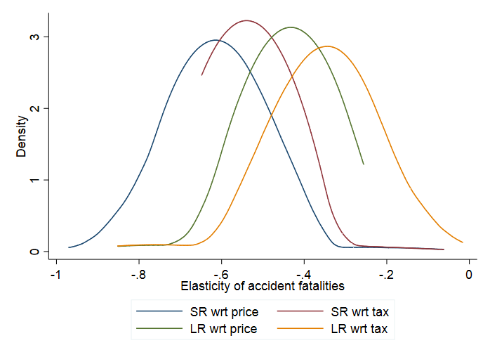
Table 7.9 summarizes the key characteristics of the distributions shown in Figure 7.7: mean, median, 5th and 95th percentiles.
| Accident fatalities | Short-run | Long-run | ||
|---|---|---|---|---|
| wrt price | wrt tax | wrt price | wrt tax | |
| Default elasticity | -0.168 | -0.150 | -0.192 | -0.137 |
| Mean | -0.613 | -0.536 | -0.443 | -0.357 |
| Median | -0.603 | -0.546 | -0.432 | -0.364 |
| 5th percentile | -0.741 | -0.571 | -0.514 | -0.459 |
| 95th percentile | -0.532 | -0.491 | -0.373 | -0.208 |
| Number of estimates | 151 | 160 | 169 | 158 |
7.6.3 Road damage
Road damage is measured in CPAT with the road infrastructure expenditure for maintenance, as listed in the WRS. The underlying hypothesis is that all road damage is repaired and therefore captured by the road maintenance budget of the government, as opposed to road investment for the expansion of the road network.
Compared to the other two outcomes previously discussed, road damage presents the particularity to be more dependent on diesel price than on fuel price. Although the differential impact of a carbon tax on fuel and gasoline prices is relatively small, we thus use diesel prices in this section rather than gasoline prices as before.
7.6.3.1 Short-run elasticity
The results of road damage in the short run are not significant. They are included in the MS Excel appendix to this report, but within CPAT we assume the short run elasticity of road damage wrt fuel prices to be zero.
7.6.3.2 Long-run elasticity
In the long run, road damage costs react to diesel prices, but the results are not statistically significant as shown in Table 7.10. In the simple specifications (columns 1 and 2), the elasticity is around -0.3. We use the parameters estimated in the specification including interaction terms (column 3) in order to compute the country-specific elasticities for CPAT presented in the next subsection.
| Road damage | (1) | (2) | (3) |
|---|---|---|---|
| between estimator | |||
| Lag of ln of diesel pump price (2018 PPP-adj USD cents/liter) | 0.0957 | -0.269 | 0.819 |
| (0.862) | (0.735) | (0.156) | |
| Interaction ln(diesel) w/ Minimum of daily min-temperature (in B0C) | 0.352 | ||
| (0.397) | |||
| Interaction ln(diesel) w/ Total length of road network (in km) | -1.476*** | ||
| (0.00177) | |||
| Interaction ln(diesel) w/ Share of paved roads (in %) | -0.947** | ||
| (0.0431) | |||
| Interaction ln(diesel) w/ Share of urban population (in %) | 0.391 | ||
| (0.277) | |||
| Interaction ln(diesel) w/ Number of lorries and vans | 0.563 | ||
| (0.677) | |||
| Covariates | No | Yes | Yes |
| Interaction terms | No | No | Yes |
| Observations | 1,321 | 1,039 | 1,039 |
| R-squared | 0.726 | 0.803 | 0.914 |
| Number of countries | 118 | 103 | 103 |
Robust p-values in parentheses, *** p<0.01, ** p<0.05, * p<0.1. Ln(diesel) is the natural logarithm of the gasoline pump price (2018 PPP_adjusted USD cents/liter). The parameter marked in green is the default long-run elasticity in CPAT for countries that have not sufficient data for country-specific elasticity estimation. Sample averages are subtracted from the interaction variables prior to interacting with the fuel price.
7.6.3.3 Country-specific elasticities
As shown on Table 7.11, the long-run road damage elasticities depend on structural features of the country’s transportation system (population density, total road network, urbanization), on the vehicle fleet, particularly larger vehicles, and rule of law. Additionally, weather plays an important role for road damage. In particular, minimum temperatures seem to impact the effect of a carbon tax: with less traffic, the effect of low temperatures (frost) on road damage is reduced.
| Long run | |
|---|---|
| wrt price | wrt tax |
| Number of lorries and vans | Number of lorries and vans |
| Total length of road network (in km) | Total length of road network (in km) |
| Share of urban population (in %) | Share of urban population (in %) |
| Share of paved roads (in %) | Road density (in km per km2) |
| Minimum of daily min-temperature (in °C) | Population density (people per sq. km of land area) |
Notes: The covariates used for estimating the country-specific elasticities are chosen by a data-driven machine learning algorithm among a list of 30 candidate variables.
Figure 7.8 shows that the estimates using fuel taxes suggest less elasticity of road prices wrt fuel taxes than the estimates using prices at the pump. Overall, virtually all estimates lie above -1, suggesting a less than one-to-one reaction of road damage to changes in fuel prices.
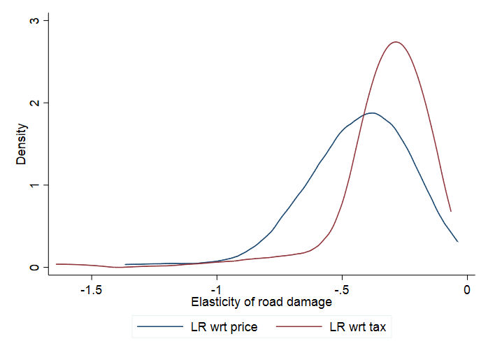
Table 7.12 summarizes the key characteristics of the distributions shown in Figure 7.8.
| Road damage | Long-run | |
|---|---|---|
| wrt price | wrt tax | |
| Default elasticity | -0.269 | -0.497 |
| Mean | -0.440 | -0.335 |
| Median | -0.415 | -0.284 |
| 5th percentile | -0.768 | -0.699 |
| 95th percentile | -0.187 | -0.173 |
| Number of estimates | 170 | 178 |
7.6.4 Vehicle-km travelled (VKT)
We analyze the effect of fuel prices on VKT in order to illustrate one of the main channels through which fuel prices affect congestion, accidents and road damage. We do not consider VKT a policy outcome per se and the effect of fuel prices on the other outcomes is calculated directly (not via the VKT elasticities).
7.6.4.1 Short-run elasticity
The estimated short-run elasticities of VKT wrt fuel price are shown Table 7.13. The short-run elasticity is estimated at -0.395, which is similar to the more elastic estimates in the literature (Table 7.1).
| VKT | (1) | (2) | (3) | (4) | (5) | (6) |
|---|---|---|---|---|---|---|
| pooled OLS | within estimator | |||||
| Ln of gasoline pump price (2018 PPP-adj USD cents/liter) | -0.203** | -0.0940 | -0.0595 | -0.237*** | -0.395*** | -0.470*** |
| (0.0276) | (0.403) | (0.787) | (9.23e-07) | (9.98e-08) | (1.15e-05) | |
| Interaction lnsuper w/ Ln of number of vehicles per capita | 0.631*** | -0.569*** | ||||
| (0.00195) | (8.36e-07) | |||||
| Interaction lnsuper w/ Ln of population | 0.0230 | -0.0117 | ||||
| (0.905) | (0.904) | |||||
| Interaction lnsuper w/ Infant mortality rate (per 1,000 live births | 0.509** | -0.676*** | ||||
| (0.0117) | (5.36e-08) | |||||
| Interaction lnsuper w/ Number of motorcycles per capita | 0.194 | 0.231*** | ||||
| (0.205) | (0.00485) | |||||
| Interaction lnsuper w/ Maximum speed on urban roads (in km/h) | 0.199 | -0.127* | ||||
| (0.136) | (0.0790) | |||||
| Covariates | No | Yes | Yes | No | Yes | Yes |
| Fixed effects | No | No | No | Yes | Yes | Yes |
| Interaction terms | No | No | Yes | No | No | Yes |
| Number of country_iso3_num | 118 | 106 | 106 | |||
| Robust pval in parentheses | 0 | 0 | 0 | 0 | 0 | 0 |
| Number of country FE | 0 | 0 | 0 | 0 | 0 | 0 |
Robust p-values in parentheses, *** p<0.01, ** p<0.05, * p<0.1. Ln(gasoline) is the natural logarithm of the gasoline pump price (2018 PPP_adjusted USD cents/liter). The parameter marked in green is the default short-run elasticity in CPAT for countries that have not sufficient data for country-specific elasticity estimation. Sample averages are subtracted from the interaction variables prior to interacting with the fuel price.
7.6.4.2 Long-run elasticity
The long-run estimate for the VKT elasticity is shown in Table 7.14. With an estimate of 0.228, our result is at the more inelastic side of estimates in the literature (Table 7.1).
| VKT | (1) | (2) | (3) |
|---|---|---|---|
| between estimator | |||
| Ln of gasoline pump price (2018 PPP-adj USD cents/liter) | -0.493 | -0.228 | 0.694 |
| (0.242) | (0.652) | (0.503) | |
| Interaction lnsuper w/ Number of motorcycles per capita | 0.131 | ||
| (0.824) | |||
| Interaction lnsuper w/ Population density (people per sq. km of land area) | 5.058 | ||
| (0.333) | |||
| Interaction lnsuper w/ Rule of law (from -2.5=low to 2.5=high) | 0.222 | ||
| (0.646) | |||
| Interaction lnsuper w/ Total length of road network (in km) | 0.197 | ||
| (0.436) | |||
| Interaction lnsuper w/ Maximum speed on rural roads (in km/h) | 0.0638 | ||
| (0.895) | |||
| Covariates | No | Yes | Yes |
| Interaction terms | No | No | Yes |
| Number of country_iso3_num | 118 | 106 | 106 |
| Robust pval in parentheses | 0 | 0 | 0 |
| Number of country FE | 0 | 0 | 0 |
Robust p-values in parentheses, *** p<0.01, ** p<0.05, * p<0.1. Ln(gasoline) is the natural logarithm of the gasoline pump price (2018 PPP_adjusted USD cents/liter). The parameter marked in green is the default long-run elasticity in CPAT for countries that have not sufficient data for country-specific elasticity estimation. Sample averages are subtracted from the interaction variables prior to interacting with the fuel price.
7.6.4.3 Country-specific elasticities
Similar to the other variables, Table 7.15 shows the variables selected by the algorithm for estimating the country-specific elasticities. We see that the road network (total length of the network, road density), the fleet (motorcycles, number of vehicles) and more general country characteristics (population size and density, infant mortality rate, GDP) enter into the calculation.
| Short run | Long run | ||
|---|---|---|---|
| wrt price | wrt tax | wrt price | wrt tax |
| Ln of number of vehicles per capita | Number of vehicles per capita | Total length of road network (in km) | Total length of road network (in km) |
| Number of motorcycles per capita | Number of motorcycles per capita | Maximum speed on rural roads (in km/h) | Maximum speed on rural roads (in km/h) |
| Ln of population | Population density (people per sq. km of land area) | Number of motorcycles per capita | Number of motorcycles per capita |
| Infant mortality rate (per 1,000 live births) | Road density (in km per km2) | Rule of law (from -2.5=low to 2.5=high) | GDP per capita (in 2018 PPP-adj USD) |
| Maximum speed on urban roads (in km/h) | Precipitation (in mm) | Population density (people per sq. km of land area) | Road density (in km per km2) |
Notes: The covariates used for estimating the country-specific elasticities are chosen by a data-driven machine learning algorithm among a list of 30 candidate variables.
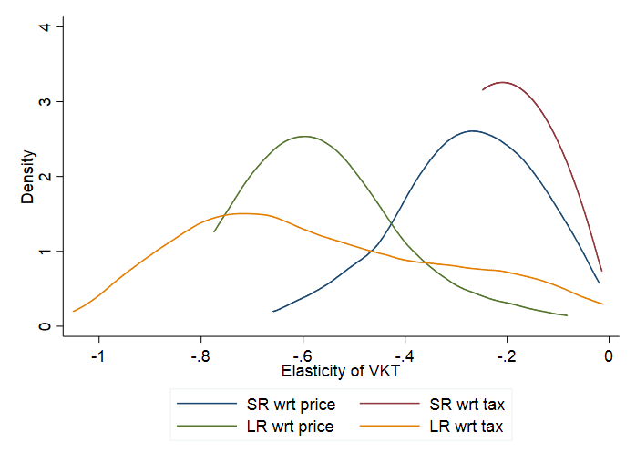
The distribution of the resulting country-specific elasticity estimates is described in Figure 7.9 and Table 7.16. In the majority of countries, VKT is more elastic in the long-run than in the short-run.
| VKT | Short-run | Long-run | ||
|---|---|---|---|---|
| wrt price | wrt tax | wrt price | wrt tax | |
| Default elasticity | -0.395 | -0.218 | -0.228 | -0.225 |
| Mean | -0.282 | -0.209 | -0.561 | -0.566 |
| Median | -0.241 | -0.220 | -0.591 | -0.620 |
| 5th percentile | -0.512 | -0.245 | -0.724 | -0.891 |
| 95th percentile | -0.138 | -0.128 | -0.245 | -0.126 |
| Number of estimates | 163 | 167 | 158 | 141 |
7.7 Excel implementation: CPAT’s Road Transport Module
7.7.1 General
The Road Transport Module takes as an input the road fuel price changes induced by the policy indicated by the user in the dashboard. The module then computes changes in VKT, congestion, accidents and road damage and presents them graphically in the dashboard tab. The information flow is schematized in Figure 7.10. Although the effect on VKT is computed, the other outcomes are modeled directly as a function of price, in order to avoid having to take functional form assumptions on the influence of VKT and its interaction with the other channels.
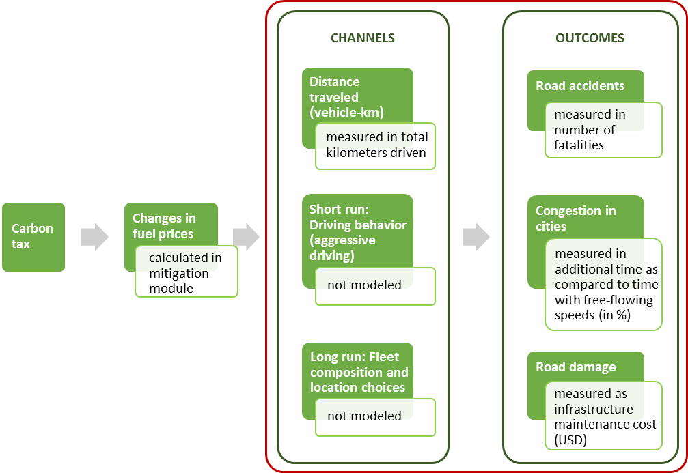
Note: Channels are shown to illustrate the economic theory; they are not modeled/estimated separately within CPAT. The estimated elasticities result of the interaction of all channels in the data.
7.7.2 Baseline forecasts
In order to graphically represent changes induced by the policy compared to a baseline, we must first establish a baseline forecast. The methodology in CPAT is identical for all three outcomes and VKT. It follows the following structure:
Establish a linear forecast based on the average growth rate of available (often incomplete) time series of the variable in the past;
- The sheet “Tran_Data” contains recent values of the outcome variables as well as the geometric average of growth rates over the past years.
Adjust the variable’s linear forecast:
for (forecasted) future deviations from (observed) average past GDP growth using the estimated elasticity of the outcome wrt GDP,
for (forecasted) future deviations from (observed) average past population growth using the estimated elasticity of the outcome wrt population.
\[Y_{t}^{\text{baseline}} = \left( \frac{\text{GDP}_{t}}{\text{GDP}_{t - 1}} - \overline{g^{\text{GDP}}} \right)^{\eta_{\text{GDP}}}{\left( \frac{\text{pop}_{t}}{\text{pop}_{t - 1}} - \overline{g^{\text{pop}}} \right)^{\eta_{\text{pop}}}Y}_{t}^{\text{simple}} \tag{7.8}\]
where:
\(Y_{t}^{\text{baseline}}\) is the baseline (without policy) forecast of variable \(Y\),
\(Y_{t}^{\text{simple}}\) is the “naïve” linear forecast based only on past observed values of \(Y\),
\(\text{GDP}_{t}\) and \(\text{GDP}_{t - 1}\) are the contemporary and previous GDP (GDP growth forecast for coming years from IMF World Economic Outlook),
\(\overline{g^{\text{GDP}}}\) is the expected GDP growth (geometric average growth over past years),
\(\eta_{\text{GDP}}\) is the elasticity of the outcome wrt GDP,
\(\text{pop}_{t}\) and \(\text{pop}_{t - 1}\) are the contemporary and previous population sizes (WB Population Estimates and Projections),
\(\overline{g^{\text{pop}}}\) is the expected population growth (geometric average growth over past years),
and \(\eta_{\text{pop}}\) is the elasticity of the outcome wrt population size.
We need to subtract expected GDP/population growth from the actual (forecasted) GDP/population growth, as the past growth rates are implicitly included in the linear forecast \(Y_{t}^{f}\).
Adjusting for GDP growth in this way should allow us to account for booms and recessions, as for example the graphically impressive drop caused by Covid-19.
7.7.3 Policy forecast
The impact of the carbon policy depends on the change in fuel prices and the variable’s elasticity wrt fuel prices/taxes.
The fuel price is computed as follows:
the baseline road fuel price is computed as the weighted average of baseline gasoline and diesel price, where the weights equal the respective fuel’s share of baseline total road fuel consumption;
the policy road fuel price is computed as the weighted average of policy gasoline and diesel price, where the weights equal the respective fuel’s share of policy total road fuel consumption;
the price change is defined as the ratio of the policy road fuel price over the baseline road fuel price.
We obtain the policy forecast \(Y_{t}^{\text{policy}}\) by weighting the price change by the elasticity wrt fuel price \(\eta_{p}\).
\[Y_{t}^{\text{policy}} = \left( \frac{p^{\text{policy}}}{p^{\text{baseline}}} \right)^{\eta_{p}}Y_{t}^{\text{baseline}} \tag{7.9}\]
where \(p^{\text{baseline}}\) is the baseline road fuel price and \(p^{\text{policy}}\) is the policy road fuel price.
7.7.4 Dashboard graphics
For VKT and the three outcomes of interest, we establish similar graphics in the CPAT dashboard.
For each variable, there is a line graph representing the time series of the baseline forecast \(Y_{t}^{\text{baseline}}\) and the policy forecast \(Y_{t}^{\text{policy}}\). An example is given in Figure Figure 7.11.
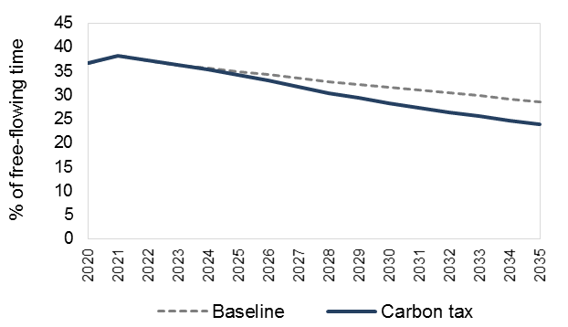
Source: Tomtom, own computations.
We then plot a bar chart of the difference between the two lines of Figure Figure 7.11, representing only the change induced by the policy. An example is given in Figure 7.12.
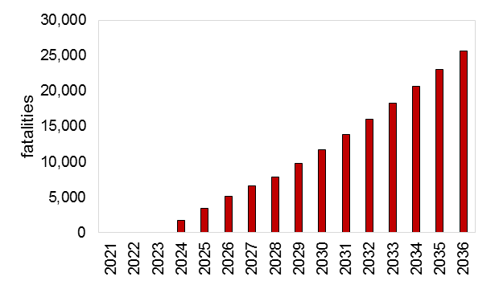
Source: WRS, OECD, UNECE, own computations.
Finally, we provide some general evidence of the effect of fuel prices on accident and congestion with a scatter graph. For this scatter graph, we combine cross-sectional country-level information for a given year with year-level information of all available years for the country for which the policy introduction is studied. We also add a linear trendline, which captures the negative correlation between fuel prices and our outcomes. An example is given in Figure 7.13.
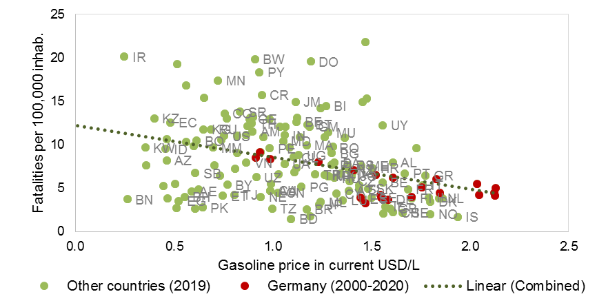
Source: WRS, Enerdata, EIU, IEA, own computations.
7.7.5 Externality cost per liter of motor fuel
This section explains how CPAT computes the externality cost (per liter of motor fuel) from accidents and congestion. The externality costs are computed as the co-benefits from a carbon tax-induced reduction in motor fuel consumption.
The main road transport co-benefits of a carbon tax are a reduction in road accidents (from a reduction in driving, changes in the vehicle fleet, less aggressive driving, etc.) and a reduction in congestion (from a reduction in driving, an increase in car sharing, changes in the vehicle fleet, changes in transport timing decisions, etc.).
Within CPAT, the magnitude of these co-benefits is computed using empirical elasticities from a large historical dataset using econometric panel methods. Given the multitude of channels involved in the final result, the effect on accidents/congestion is not directly proportional to the change in vehicle-kilometers traveled (VKT) or the change in fuel consumption. For more details on the data and estimation procedure, please refer to the Technical Appendix to the CPAT Road Transport Module.
The externality cost is computed as follows:
Compute baseline forecast of accidents/congestion without policy;
- Baseline forecasts take into account historical growth rates, adjusted for forecasted GDP and population growth.
Compute policy forecast of accidents/congestion with carbon tax of users choice;
- Policy forecasts are the baseline forecast adjusted for the fuel price change using the country-specific elasticity; this country-specific elasticity is empirically estimated and measures overall (i.e. across channels) which fuel prices affect accidents/congestion.
Compute for policy and baseline scenarios the monetary value of accidents (multiplying fatalities by value of statistical life) and congestion (multiplying time lost in traffic times value of travel time);
Compute the change in value of accidents/congestion;
Divide change in value by change in motor fuel consumption from CPAT Mitigation Module.
The externality cost estimate varies each year. For simplicity, only one year is shown as an example in the CPAT Dashboard. As an example Figure 7.14 shows the graph for Colombia.
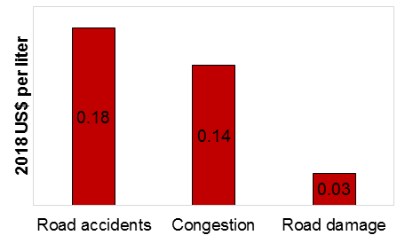
Source: Tomtom, WRS, UNECE, OECD, IMF, own computations.
Note that the TomTom Traffic Index is defined on the city-level. Therefore, the congestion externality shown in CPAT applies only the urban part of transport. To our knowledge, there is no database measuring congestion levels on the national level. Rural transport is assumed to be free of congestion, i.e. causing zero congestion externality cost.
7.8 Caveats
The CPAT Road Transport Module choses a reduced-form econometric approach to predict the impact of carbon taxes on road transport externalities. Certain caveats must be kept in mind:
The quality of the estimates relies on the quality of available data. For certain countries/years, there is no sufficient data to estimate country-specific transport externality elasticities. In these cases, an internationally estimated default value was used. In the Road Transport Module (Transport tab, section B – elasticities), the user can see whether country-specific or default elasticities have been used.
Reduced-form approaches do not explicitly model the mechanisms. A carbon tax impacts transport demand through various channels: more fuel-efficient use of existing vehicles (e.g. speed, carpooling), switch to less carbon-intensive means of transport (e.g. public transport, non-motorized), reduction in the number/length of trips. The CPAT Road Transport Module cannot disentangle these channels, and can thus not attribute changes in outcomes to individual channels. In particular, carbon taxes make the use of private vehicles more expensive and CPAT cannot measure the loss from the value of non-realized trips.
General equilibrium effects are not included, such as changes in prices or availability of the outside options. One example frequently discussed are electric vehicles (EVs). Currently, CPAT Road Transport Module does not include EVs. However, an extension of the CPAT Road Transport Module is planned in order to include EVs.
Elasticities, such as estimated with the CPAT Road Transport Module’s methodology, predict the reaction of outcomes to small changes in carbon taxes. CPAT Road Transport module does not account for potentially non-linear responses to large policy changes. In particular, large policy changes across the world may induce technology changes and relevant changes in the vehicle fleet.
A uniform carbon tax would impact not only private vehicles but also lower-emitting transport modes such as buses. An increase in the price of public transit could have a negative impact on people’s ability to reach jobs and essential services thereby contributing to fragmented labor markets and loss of welfare. Since low-income households are more likely to reduce their number of trips (instead of switching means of transport), a carbon tax could reduce their access to economic opportunities and thereby impact inequality. While it is not within the scope of CPAT1.0, understanding the potential impact of carbon pricing on access to employment is important to inform the development of more targeted policies that can offset any such negative distributional effects of a carbon tax on transit accessibility.
7.9 Status of upgrades since the last review, changes not implemented and remaining issues
We constantly update the dataset used to estimate the parameters behind the CPAT Road Transport Module. So far, CPAT reflects the last complete update using the WRS 2020 edition. A further update using the WRS 2021 edition is in progress.
As we are using proprietary data, we had to transform all non-shareable (proprietary) data into a shareable form. For the Road Transport Module, this was mainly achieved by using (near-future) forecast based on historic data forecasts, instead of the historic data itself.
We have further added estimates of the externality cost per liter of motor fuel, described in Section 7.7.5.
We are still working on two features not yet implemented:
Integration of electric vehicles (EVs): The introduction of EVs and their necessary charging infrastructure is relatively slow, especially in developing countries. So far, we have struggled to get sufficient data for credible estimations. Nevertheless, we are aware that EVs may fundamentally change the link between traffic (including accidents and congestion) and carbon taxes. We are thus working on a methodology to include EVs and EV-supporting policies into CPAT.
Between-module consistency: Currently, the VKT estimates in the CPAT Road Transport Module are not linked to the transport CO2 in the Mitigation Module. In fact, VKT and CO2 may follow distinct paths as technology and driving habits (e.g. number of people in a vehicle) change. Nevertheless, future versions of CPAT will improve the coordination between modules.
7.10 Appendices
7.10.1 Detailed variable list with data sources
| Definition | Source | Inter-polated | |
|---|---|---|---|
| Outcomes | |||
| Total road distance travelled (in million vehicle-km) | WRS, OECD14 | ||
| Number of fatalities by road accident: Any person killed immediately or dying within 30 days as a result of an accident (accident involving at least one road vehicle in motion), excluding suicides | WRS, UNECE, OECD | ||
| Congestion index (in % deviation from free-flowing speed) | TomTom | ||
| Road maintenance cost (in million 2010 USD) | WRS | ||
| Covariates | |||
| Year | |||
| Retail price per liter of motor gasoline (unleaded Octan 95) at the pump (in 2010 USD cent/liter) | IMF, Enerdata, IEA, GIZ | ||
| Retail price per liter of motor diesel at the pump (in 2010 USD cent/liter) | IMF, Enerdata, IEA, GIZ | ||
| Population | WDI | X | |
| GDP per capita (in 2010 USD) | WDI | ||
| Youth share (population 15 to 24 years-old in % of total) | WDI | ||
| Alcohol, recorded per capita (15+) consumption (in liters of pure alcohol) | WHO/GHO | ||
| Maximum speed in rural areas15 (in km/h) | WHO/GHO | X | |
| Maximum speed in urban areas (in km/h) | WHO/GHO | X | |
| Control of corruption (from -2.5=low to 2.5=high) | WGI | ||
| Road density (km of road per km2 of country area) | WRS | ||
| Share of motorcycles (in % of total vehicle fleet) | WRS | X | |
| Vehicles per capita | WRS | X | |
| Additional candidate variables for elasticity | |||
| Yearly in rainfall (in total mm) | CCKP | ||
| Annual number of days with minimum temperature ≤ 0°F/-17.8°C | NCEI | ||
| Annual number of days with minimum temperature ≤ 32°F/0°C | NCEI | ||
| Annual number of days with minimum temperature ≥ 90°F/32.2°C | NCEI | ||
| Extreme minimum temperature for the year (in °C) | NCEI | ||
| Satisfaction with public transport (in %) | SDR | ||
| GDP (in 2010 USD) | WDI | ||
| Infant mortality rate (per 1,000 live births) | WDI | ||
| Population density (in persons/km2) | WDI | X | |
| Share of urban population (in % of total population) | WDI | X | |
| Rule of law (from -2.5=low to 2.5=high) | WGI | ||
| Blood alcohol concentration (BAC) legal driving limit (in g/dl) | WHO/GHO | X | |
| Maximum speed (average of urban and rural, in km/h) | WHO/GHO | X | |
| Seat belt wearing rate in front seat (in %) | WHO/GHO | X | |
| Motorcycles per capita | WRS | X | |
| Number of lorries and trucks | WRS | X | |
| Share of lorries and trucks (in % of total vehicle fleet) | WRS | X | |
| Share of paved roads (in % of total road km) | WRS | X | |
| Total length of road network (in km) | WRS | X |
7.10.2 Countries/years covered by the dataset
| no outcomes | None of the outcomes |
|---|---|
| some outcomes and covars | Some outcomes and covariates |
| all outcomes, but not all covars | All outcome variables, but not all covariates |
| all | All outcomes and all covariates |
| 1995 | 1996 | 1997 | 1998 | 1999 | 2000 | 2001 | 2002 | 2003 | 2004 | 2005 | 2006 | 2007 | 2008 | 2009 | 2010 | 2011 | 2012 | 2013 | 2014 | 2015 | 2016 | 2017 | 2018 | 2019 | 2020 | 2021 | |
|---|---|---|---|---|---|---|---|---|---|---|---|---|---|---|---|---|---|---|---|---|---|---|---|---|---|---|---|
| Afghanistan | no outcomes | no outcomes | no outcomes | no outcomes | no outcomes | some outcomes and covars | some outcomes and covars | some outcomes and covars | some outcomes and covars | some outcomes and covars | some outcomes and covars | some outcomes and covars | some outcomes and covars | some outcomes and covars | some outcomes and covars | some outcomes and covars | some outcomes and covars | some outcomes and covars | some outcomes and covars | some outcomes and covars | some outcomes and covars | some outcomes and covars | some outcomes and covars | some outcomes and covars | some outcomes and covars | no outcomes | no outcomes |
| Albania | some outcomes and covars | some outcomes and covars | some outcomes and covars | some outcomes and covars | some outcomes and covars | some outcomes and covars | some outcomes and covars | some outcomes and covars | some outcomes and covars | some outcomes and covars | some outcomes and covars | some outcomes and covars | some outcomes and covars | some outcomes and covars | some outcomes and covars | some outcomes and covars | some outcomes and covars | some outcomes and covars | some outcomes and covars | some outcomes and covars | some outcomes and covars | some outcomes and covars | some outcomes and covars | some outcomes and covars | some outcomes and covars | some outcomes and covars | no outcomes |
| Algeria | no outcomes | some outcomes and covars | no outcomes | no outcomes | no outcomes | no outcomes | no outcomes | no outcomes | some outcomes and covars | no outcomes | some outcomes and covars | some outcomes and covars | some outcomes and covars | some outcomes and covars | some outcomes and covars | some outcomes and covars | some outcomes and covars | some outcomes and covars | some outcomes and covars | some outcomes and covars | some outcomes and covars | some outcomes and covars | some outcomes and covars | no outcomes | some outcomes and covars | no outcomes | no outcomes |
| American Samoa | no outcomes | no outcomes | no outcomes | no outcomes | no outcomes | no outcomes | no outcomes | no outcomes | no outcomes | no outcomes | no outcomes | no outcomes | no outcomes | no outcomes | no outcomes | no outcomes | no outcomes | no outcomes | no outcomes | no outcomes | no outcomes | no outcomes | no outcomes | no outcomes | no outcomes | no outcomes | no outcomes |
| Andorra | no outcomes | no outcomes | no outcomes | no outcomes | no outcomes | no outcomes | no outcomes | no outcomes | no outcomes | no outcomes | no outcomes | no outcomes | no outcomes | no outcomes | no outcomes | no outcomes | no outcomes | no outcomes | no outcomes | no outcomes | no outcomes | no outcomes | no outcomes | no outcomes | no outcomes | no outcomes | no outcomes |
| Angola | some outcomes and covars | no outcomes | no outcomes | no outcomes | no outcomes | some outcomes and covars | some outcomes and covars | some outcomes and covars | some outcomes and covars | some outcomes and covars | some outcomes and covars | some outcomes and covars | some outcomes and covars | some outcomes and covars | some outcomes and covars | some outcomes and covars | some outcomes and covars | some outcomes and covars | some outcomes and covars | some outcomes and covars | some outcomes and covars | some outcomes and covars | some outcomes and covars | some outcomes and covars | some outcomes and covars | no outcomes | no outcomes |
| Anguilla | no outcomes | no outcomes | no outcomes | no outcomes | no outcomes | no outcomes | no outcomes | no outcomes | no outcomes | no outcomes | no outcomes | no outcomes | no outcomes | no outcomes | no outcomes | no outcomes | no outcomes | no outcomes | no outcomes | no outcomes | no outcomes | no outcomes | no outcomes | no outcomes | no outcomes | no outcomes | no outcomes |
| Antigua and Barbuda | no outcomes | no outcomes | no outcomes | no outcomes | no outcomes | no outcomes | no outcomes | no outcomes | no outcomes | no outcomes | no outcomes | no outcomes | no outcomes | no outcomes | no outcomes | no outcomes | no outcomes | no outcomes | no outcomes | no outcomes | no outcomes | no outcomes | no outcomes | no outcomes | no outcomes | no outcomes | no outcomes |
| Argentina | some outcomes and covars | some outcomes and covars | some outcomes and covars | some outcomes and covars | some outcomes and covars | some outcomes and covars | some outcomes and covars | some outcomes and covars | some outcomes and covars | some outcomes and covars | some outcomes and covars | some outcomes and covars | some outcomes and covars | some outcomes and covars | some outcomes and covars | some outcomes and covars | some outcomes and covars | some outcomes and covars | some outcomes and covars | some outcomes and covars | all outcomes, but not all covars | all outcomes, but not all covars | some outcomes and covars | some outcomes and covars | some outcomes and covars | some outcomes and covars | some outcomes and covars |
| Armenia | some outcomes and covars | some outcomes and covars | some outcomes and covars | some outcomes and covars | some outcomes and covars | some outcomes and covars | some outcomes and covars | some outcomes and covars | some outcomes and covars | some outcomes and covars | some outcomes and covars | some outcomes and covars | some outcomes and covars | some outcomes and covars | some outcomes and covars | some outcomes and covars | some outcomes and covars | some outcomes and covars | some outcomes and covars | some outcomes and covars | some outcomes and covars | some outcomes and covars | some outcomes and covars | some outcomes and covars | some outcomes and covars | some outcomes and covars | no outcomes |
| Aruba | no outcomes | no outcomes | no outcomes | no outcomes | no outcomes | no outcomes | no outcomes | no outcomes | no outcomes | no outcomes | no outcomes | no outcomes | no outcomes | no outcomes | no outcomes | no outcomes | no outcomes | no outcomes | no outcomes | no outcomes | no outcomes | no outcomes | no outcomes | no outcomes | no outcomes | no outcomes | no outcomes |
| Australia | some outcomes and covars | some outcomes and covars | some outcomes and covars | some outcomes and covars | some outcomes and covars | some outcomes and covars | some outcomes and covars | some outcomes and covars | some outcomes and covars | some outcomes and covars | some outcomes and covars | some outcomes and covars | some outcomes and covars | some outcomes and covars | some outcomes and covars | some outcomes and covars | some outcomes and covars | some outcomes and covars | all | all | all | all | all | all outcomes, but not all covars | some outcomes and covars | some outcomes and covars | some outcomes and covars |
| Austria | some outcomes and covars | some outcomes and covars | some outcomes and covars | some outcomes and covars | some outcomes and covars | some outcomes and covars | some outcomes and covars | some outcomes and covars | some outcomes and covars | some outcomes and covars | some outcomes and covars | some outcomes and covars | some outcomes and covars | all | all | all | all | all | all | all | all | all | all | all outcomes, but not all covars | all outcomes, but not all covars | some outcomes and covars | some outcomes and covars |
| Azerbaijan | some outcomes and covars | some outcomes and covars | some outcomes and covars | some outcomes and covars | some outcomes and covars | some outcomes and covars | some outcomes and covars | some outcomes and covars | some outcomes and covars | some outcomes and covars | some outcomes and covars | some outcomes and covars | some outcomes and covars | some outcomes and covars | some outcomes and covars | some outcomes and covars | some outcomes and covars | some outcomes and covars | some outcomes and covars | some outcomes and covars | some outcomes and covars | some outcomes and covars | some outcomes and covars | some outcomes and covars | some outcomes and covars | some outcomes and covars | no outcomes |
| Bahamas | no outcomes | no outcomes | no outcomes | no outcomes | no outcomes | no outcomes | no outcomes | no outcomes | no outcomes | no outcomes | no outcomes | no outcomes | no outcomes | no outcomes | no outcomes | no outcomes | no outcomes | no outcomes | no outcomes | no outcomes | no outcomes | no outcomes | no outcomes | no outcomes | no outcomes | no outcomes | no outcomes |
| Bahrain | some outcomes and covars | some outcomes and covars | some outcomes and covars | some outcomes and covars | some outcomes and covars | some outcomes and covars | some outcomes and covars | some outcomes and covars | some outcomes and covars | some outcomes and covars | some outcomes and covars | some outcomes and covars | some outcomes and covars | some outcomes and covars | some outcomes and covars | some outcomes and covars | some outcomes and covars | some outcomes and covars | some outcomes and covars | some outcomes and covars | some outcomes and covars | some outcomes and covars | some outcomes and covars | some outcomes and covars | some outcomes and covars | no outcomes | no outcomes |
| Bangladesh | some outcomes and covars | some outcomes and covars | some outcomes and covars | some outcomes and covars | some outcomes and covars | some outcomes and covars | no outcomes | no outcomes | some outcomes and covars | no outcomes | no outcomes | some outcomes and covars | no outcomes | some outcomes and covars | some outcomes and covars | some outcomes and covars | some outcomes and covars | some outcomes and covars | some outcomes and covars | some outcomes and covars | some outcomes and covars | some outcomes and covars | some outcomes and covars | some outcomes and covars | some outcomes and covars | no outcomes | no outcomes |
| Barbados | some outcomes and covars | some outcomes and covars | some outcomes and covars | some outcomes and covars | some outcomes and covars | some outcomes and covars | some outcomes and covars | some outcomes and covars | some outcomes and covars | no outcomes | no outcomes | no outcomes | some outcomes and covars | no outcomes | no outcomes | no outcomes | some outcomes and covars | no outcomes | some outcomes and covars | no outcomes | no outcomes | no outcomes | no outcomes | some outcomes and covars | some outcomes and covars | no outcomes | no outcomes |
| Belarus | some outcomes and covars | some outcomes and covars | some outcomes and covars | some outcomes and covars | some outcomes and covars | some outcomes and covars | some outcomes and covars | some outcomes and covars | some outcomes and covars | some outcomes and covars | some outcomes and covars | some outcomes and covars | some outcomes and covars | some outcomes and covars | some outcomes and covars | some outcomes and covars | some outcomes and covars | some outcomes and covars | some outcomes and covars | some outcomes and covars | some outcomes and covars | some outcomes and covars | some outcomes and covars | some outcomes and covars | some outcomes and covars | some outcomes and covars | no outcomes |
| Belgium | some outcomes and covars | some outcomes and covars | some outcomes and covars | some outcomes and covars | some outcomes and covars | some outcomes and covars | some outcomes and covars | some outcomes and covars | some outcomes and covars | some outcomes and covars | some outcomes and covars | some outcomes and covars | some outcomes and covars | all | all outcomes, but not all covars | all | all | all | all | all | all | all outcomes, but not all covars | all outcomes, but not all covars | some outcomes and covars | some outcomes and covars | some outcomes and covars | some outcomes and covars |
| Belize | no outcomes | some outcomes and covars | some outcomes and covars | some outcomes and covars | no outcomes | no outcomes | no outcomes | no outcomes | no outcomes | no outcomes | no outcomes | some outcomes and covars | some outcomes and covars | some outcomes and covars | some outcomes and covars | some outcomes and covars | some outcomes and covars | some outcomes and covars | some outcomes and covars | some outcomes and covars | no outcomes | no outcomes | no outcomes | some outcomes and covars | some outcomes and covars | no outcomes | no outcomes |
| Benin | some outcomes and covars | some outcomes and covars | no outcomes | no outcomes | no outcomes | no outcomes | no outcomes | no outcomes | no outcomes | some outcomes and covars | some outcomes and covars | some outcomes and covars | some outcomes and covars | some outcomes and covars | some outcomes and covars | no outcomes | some outcomes and covars | some outcomes and covars | some outcomes and covars | some outcomes and covars | some outcomes and covars | some outcomes and covars | some outcomes and covars | some outcomes and covars | no outcomes | no outcomes | no outcomes |
| Bermuda | no outcomes | no outcomes | no outcomes | no outcomes | no outcomes | no outcomes | no outcomes | no outcomes | no outcomes | no outcomes | no outcomes | no outcomes | no outcomes | no outcomes | no outcomes | no outcomes | some outcomes and covars | no outcomes | no outcomes | no outcomes | some outcomes and covars | some outcomes and covars | some outcomes and covars | no outcomes | no outcomes | no outcomes | no outcomes |
| Bhutan | no outcomes | no outcomes | no outcomes | some outcomes and covars | some outcomes and covars | no outcomes | no outcomes | no outcomes | no outcomes | no outcomes | no outcomes | no outcomes | some outcomes and covars | some outcomes and covars | some outcomes and covars | some outcomes and covars | some outcomes and covars | some outcomes and covars | some outcomes and covars | some outcomes and covars | some outcomes and covars | some outcomes and covars | some outcomes and covars | some outcomes and covars | some outcomes and covars | no outcomes | no outcomes |
| Bolivia | some outcomes and covars | some outcomes and covars | no outcomes | some outcomes and covars | some outcomes and covars | some outcomes and covars | some outcomes and covars | some outcomes and covars | some outcomes and covars | some outcomes and covars | some outcomes and covars | some outcomes and covars | some outcomes and covars | some outcomes and covars | some outcomes and covars | some outcomes and covars | some outcomes and covars | some outcomes and covars | some outcomes and covars | some outcomes and covars | some outcomes and covars | some outcomes and covars | some outcomes and covars | some outcomes and covars | some outcomes and covars | no outcomes | no outcomes |
| Bosnia and Herzegovina | some outcomes and covars | some outcomes and covars | some outcomes and covars | some outcomes and covars | some outcomes and covars | some outcomes and covars | some outcomes and covars | some outcomes and covars | some outcomes and covars | some outcomes and covars | some outcomes and covars | some outcomes and covars | some outcomes and covars | some outcomes and covars | some outcomes and covars | some outcomes and covars | some outcomes and covars | some outcomes and covars | some outcomes and covars | some outcomes and covars | some outcomes and covars | some outcomes and covars | some outcomes and covars | some outcomes and covars | some outcomes and covars | some outcomes and covars | no outcomes |
| Botswana | some outcomes and covars | some outcomes and covars | some outcomes and covars | some outcomes and covars | some outcomes and covars | some outcomes and covars | some outcomes and covars | some outcomes and covars | some outcomes and covars | some outcomes and covars | some outcomes and covars | some outcomes and covars | some outcomes and covars | some outcomes and covars | some outcomes and covars | some outcomes and covars | some outcomes and covars | some outcomes and covars | some outcomes and covars | some outcomes and covars | some outcomes and covars | some outcomes and covars | some outcomes and covars | some outcomes and covars | some outcomes and covars | no outcomes | no outcomes |
| Brazil | some outcomes and covars | some outcomes and covars | no outcomes | some outcomes and covars | no outcomes | no outcomes | no outcomes | no outcomes | some outcomes and covars | some outcomes and covars | some outcomes and covars | some outcomes and covars | some outcomes and covars | some outcomes and covars | some outcomes and covars | some outcomes and covars | some outcomes and covars | some outcomes and covars | some outcomes and covars | some outcomes and covars | some outcomes and covars | some outcomes and covars | some outcomes and covars | some outcomes and covars | some outcomes and covars | some outcomes and covars | some outcomes and covars |
| British Virgin Islands | no outcomes | no outcomes | no outcomes | no outcomes | no outcomes | no outcomes | no outcomes | no outcomes | no outcomes | no outcomes | no outcomes | no outcomes | no outcomes | no outcomes | no outcomes | no outcomes | no outcomes | no outcomes | no outcomes | no outcomes | no outcomes | no outcomes | no outcomes | no outcomes | no outcomes | no outcomes | no outcomes |
| Brunei Darussalam | some outcomes and covars | some outcomes and covars | some outcomes and covars | some outcomes and covars | some outcomes and covars | some outcomes and covars | some outcomes and covars | some outcomes and covars | some outcomes and covars | no outcomes | some outcomes and covars | some outcomes and covars | some outcomes and covars | some outcomes and covars | some outcomes and covars | some outcomes and covars | some outcomes and covars | some outcomes and covars | some outcomes and covars | some outcomes and covars | some outcomes and covars | some outcomes and covars | some outcomes and covars | some outcomes and covars | some outcomes and covars | no outcomes | no outcomes |
| Bulgaria | some outcomes and covars | some outcomes and covars | some outcomes and covars | some outcomes and covars | some outcomes and covars | some outcomes and covars | some outcomes and covars | some outcomes and covars | some outcomes and covars | some outcomes and covars | some outcomes and covars | some outcomes and covars | some outcomes and covars | all outcomes, but not all covars | all | all | all | all | all | all | all | all | all | all outcomes, but not all covars | some outcomes and covars | some outcomes and covars | some outcomes and covars |
| Burkina Faso | some outcomes and covars | some outcomes and covars | no outcomes | no outcomes | no outcomes | some outcomes and covars | some outcomes and covars | some outcomes and covars | some outcomes and covars | some outcomes and covars | some outcomes and covars | some outcomes and covars | some outcomes and covars | some outcomes and covars | some outcomes and covars | some outcomes and covars | some outcomes and covars | some outcomes and covars | some outcomes and covars | some outcomes and covars | some outcomes and covars | some outcomes and covars | some outcomes and covars | some outcomes and covars | some outcomes and covars | no outcomes | no outcomes |
| Burundi | no outcomes | no outcomes | no outcomes | no outcomes | no outcomes | some outcomes and covars | some outcomes and covars | some outcomes and covars | some outcomes and covars | some outcomes and covars | some outcomes and covars | some outcomes and covars | some outcomes and covars | some outcomes and covars | some outcomes and covars | some outcomes and covars | some outcomes and covars | some outcomes and covars | some outcomes and covars | some outcomes and covars | some outcomes and covars | some outcomes and covars | some outcomes and covars | some outcomes and covars | some outcomes and covars | no outcomes | no outcomes |
| Cambodia | some outcomes and covars | some outcomes and covars | some outcomes and covars | some outcomes and covars | some outcomes and covars | some outcomes and covars | some outcomes and covars | some outcomes and covars | some outcomes and covars | no outcomes | no outcomes | no outcomes | some outcomes and covars | no outcomes | some outcomes and covars | some outcomes and covars | no outcomes | no outcomes | some outcomes and covars | no outcomes | no outcomes | no outcomes | no outcomes | some outcomes and covars | some outcomes and covars | no outcomes | no outcomes |
| Cameroon | no outcomes | no outcomes | no outcomes | no outcomes | no outcomes | no outcomes | no outcomes | no outcomes | no outcomes | some outcomes and covars | some outcomes and covars | some outcomes and covars | some outcomes and covars | some outcomes and covars | some outcomes and covars | some outcomes and covars | some outcomes and covars | some outcomes and covars | some outcomes and covars | some outcomes and covars | some outcomes and covars | some outcomes and covars | some outcomes and covars | no outcomes | no outcomes | no outcomes | no outcomes |
| Canada | some outcomes and covars | some outcomes and covars | some outcomes and covars | some outcomes and covars | some outcomes and covars | some outcomes and covars | some outcomes and covars | some outcomes and covars | some outcomes and covars | some outcomes and covars | some outcomes and covars | some outcomes and covars | some outcomes and covars | all | all | some outcomes and covars | some outcomes and covars | some outcomes and covars | some outcomes and covars | all | all | all | all | all outcomes, but not all covars | all outcomes, but not all covars | some outcomes and covars | some outcomes and covars |
| Cape Verde | no outcomes | no outcomes | no outcomes | no outcomes | no outcomes | some outcomes and covars | some outcomes and covars | some outcomes and covars | some outcomes and covars | some outcomes and covars | some outcomes and covars | some outcomes and covars | some outcomes and covars | some outcomes and covars | some outcomes and covars | some outcomes and covars | some outcomes and covars | some outcomes and covars | some outcomes and covars | some outcomes and covars | some outcomes and covars | some outcomes and covars | some outcomes and covars | some outcomes and covars | some outcomes and covars | no outcomes | no outcomes |
| Cayman Islands | no outcomes | no outcomes | no outcomes | no outcomes | no outcomes | no outcomes | no outcomes | no outcomes | no outcomes | no outcomes | no outcomes | some outcomes and covars | some outcomes and covars | some outcomes and covars | some outcomes and covars | some outcomes and covars | some outcomes and covars | some outcomes and covars | some outcomes and covars | some outcomes and covars | some outcomes and covars | some outcomes and covars | some outcomes and covars | no outcomes | no outcomes | no outcomes | no outcomes |
| Central African Republic | no outcomes | some outcomes and covars | no outcomes | no outcomes | no outcomes | some outcomes and covars | some outcomes and covars | some outcomes and covars | some outcomes and covars | some outcomes and covars | some outcomes and covars | some outcomes and covars | some outcomes and covars | some outcomes and covars | some outcomes and covars | some outcomes and covars | some outcomes and covars | some outcomes and covars | some outcomes and covars | some outcomes and covars | some outcomes and covars | some outcomes and covars | some outcomes and covars | some outcomes and covars | some outcomes and covars | no outcomes | no outcomes |
| Chad | no outcomes | no outcomes | no outcomes | no outcomes | no outcomes | some outcomes and covars | some outcomes and covars | some outcomes and covars | some outcomes and covars | some outcomes and covars | some outcomes and covars | some outcomes and covars | some outcomes and covars | some outcomes and covars | some outcomes and covars | some outcomes and covars | some outcomes and covars | some outcomes and covars | some outcomes and covars | some outcomes and covars | some outcomes and covars | some outcomes and covars | some outcomes and covars | some outcomes and covars | some outcomes and covars | no outcomes | no outcomes |
| Channel Islands | no outcomes | no outcomes | no outcomes | no outcomes | no outcomes | no outcomes | no outcomes | no outcomes | no outcomes | no outcomes | no outcomes | no outcomes | no outcomes | no outcomes | no outcomes | no outcomes | no outcomes | no outcomes | no outcomes | no outcomes | no outcomes | no outcomes | no outcomes | no outcomes | no outcomes | no outcomes | no outcomes |
| Chile | some outcomes and covars | some outcomes and covars | some outcomes and covars | some outcomes and covars | some outcomes and covars | some outcomes and covars | some outcomes and covars | some outcomes and covars | some outcomes and covars | some outcomes and covars | some outcomes and covars | some outcomes and covars | some outcomes and covars | some outcomes and covars | some outcomes and covars | some outcomes and covars | some outcomes and covars | some outcomes and covars | some outcomes and covars | some outcomes and covars | some outcomes and covars | some outcomes and covars | some outcomes and covars | some outcomes and covars | some outcomes and covars | some outcomes and covars | some outcomes and covars |
| China | no outcomes | some outcomes and covars | some outcomes and covars | some outcomes and covars | some outcomes and covars | some outcomes and covars | some outcomes and covars | some outcomes and covars | some outcomes and covars | some outcomes and covars | some outcomes and covars | some outcomes and covars | some outcomes and covars | some outcomes and covars | some outcomes and covars | some outcomes and covars | some outcomes and covars | some outcomes and covars | some outcomes and covars | some outcomes and covars | some outcomes and covars | some outcomes and covars | some outcomes and covars | some outcomes and covars | some outcomes and covars | some outcomes and covars | no outcomes |
| China, Hong Kong | some outcomes and covars | some outcomes and covars | some outcomes and covars | some outcomes and covars | some outcomes and covars | some outcomes and covars | some outcomes and covars | some outcomes and covars | some outcomes and covars | some outcomes and covars | some outcomes and covars | some outcomes and covars | some outcomes and covars | some outcomes and covars | some outcomes and covars | some outcomes and covars | some outcomes and covars | some outcomes and covars | some outcomes and covars | some outcomes and covars | some outcomes and covars | some outcomes and covars | some outcomes and covars | some outcomes and covars | some outcomes and covars | some outcomes and covars | some outcomes and covars |
| Colombia | some outcomes and covars | some outcomes and covars | some outcomes and covars | some outcomes and covars | some outcomes and covars | some outcomes and covars | some outcomes and covars | some outcomes and covars | some outcomes and covars | some outcomes and covars | some outcomes and covars | some outcomes and covars | some outcomes and covars | some outcomes and covars | some outcomes and covars | some outcomes and covars | some outcomes and covars | some outcomes and covars | some outcomes and covars | some outcomes and covars | some outcomes and covars | some outcomes and covars | some outcomes and covars | some outcomes and covars | some outcomes and covars | some outcomes and covars | some outcomes and covars |
| Comoros | no outcomes | no outcomes | no outcomes | no outcomes | no outcomes | some outcomes and covars | some outcomes and covars | some outcomes and covars | some outcomes and covars | some outcomes and covars | some outcomes and covars | some outcomes and covars | some outcomes and covars | some outcomes and covars | some outcomes and covars | some outcomes and covars | some outcomes and covars | some outcomes and covars | some outcomes and covars | some outcomes and covars | some outcomes and covars | some outcomes and covars | some outcomes and covars | some outcomes and covars | some outcomes and covars | no outcomes | no outcomes |
| Congo, Dem. Rep. | no outcomes | no outcomes | no outcomes | no outcomes | no outcomes | some outcomes and covars | some outcomes and covars | some outcomes and covars | some outcomes and covars | some outcomes and covars | some outcomes and covars | some outcomes and covars | some outcomes and covars | some outcomes and covars | some outcomes and covars | some outcomes and covars | some outcomes and covars | some outcomes and covars | some outcomes and covars | some outcomes and covars | some outcomes and covars | some outcomes and covars | some outcomes and covars | some outcomes and covars | some outcomes and covars | no outcomes | no outcomes |
| Congo, Rep. | no outcomes | no outcomes | no outcomes | no outcomes | no outcomes | some outcomes and covars | some outcomes and covars | some outcomes and covars | some outcomes and covars | some outcomes and covars | some outcomes and covars | some outcomes and covars | some outcomes and covars | some outcomes and covars | some outcomes and covars | some outcomes and covars | some outcomes and covars | some outcomes and covars | some outcomes and covars | some outcomes and covars | some outcomes and covars | some outcomes and covars | some outcomes and covars | some outcomes and covars | some outcomes and covars | no outcomes | no outcomes |
| Costa Rica | some outcomes and covars | some outcomes and covars | some outcomes and covars | some outcomes and covars | some outcomes and covars | some outcomes and covars | some outcomes and covars | some outcomes and covars | some outcomes and covars | some outcomes and covars | some outcomes and covars | some outcomes and covars | some outcomes and covars | some outcomes and covars | some outcomes and covars | some outcomes and covars | some outcomes and covars | some outcomes and covars | some outcomes and covars | some outcomes and covars | some outcomes and covars | some outcomes and covars | some outcomes and covars | some outcomes and covars | some outcomes and covars | no outcomes | no outcomes |
| Cote d’Ivoire | no outcomes | no outcomes | no outcomes | no outcomes | no outcomes | no outcomes | no outcomes | no outcomes | no outcomes | no outcomes | no outcomes | no outcomes | no outcomes | some outcomes and covars | no outcomes | no outcomes | no outcomes | some outcomes and covars | some outcomes and covars | some outcomes and covars | some outcomes and covars | some outcomes and covars | some outcomes and covars | some outcomes and covars | no outcomes | no outcomes | no outcomes |
| Croatia | some outcomes and covars | some outcomes and covars | some outcomes and covars | some outcomes and covars | some outcomes and covars | some outcomes and covars | some outcomes and covars | some outcomes and covars | some outcomes and covars | some outcomes and covars | some outcomes and covars | some outcomes and covars | some outcomes and covars | some outcomes and covars | some outcomes and covars | some outcomes and covars | some outcomes and covars | some outcomes and covars | some outcomes and covars | some outcomes and covars | some outcomes and covars | some outcomes and covars | some outcomes and covars | some outcomes and covars | some outcomes and covars | some outcomes and covars | no outcomes |
| Cuba | some outcomes and covars | some outcomes and covars | some outcomes and covars | no outcomes | no outcomes | no outcomes | no outcomes | no outcomes | no outcomes | some outcomes and covars | some outcomes and covars | some outcomes and covars | some outcomes and covars | some outcomes and covars | some outcomes and covars | some outcomes and covars | some outcomes and covars | some outcomes and covars | some outcomes and covars | some outcomes and covars | some outcomes and covars | some outcomes and covars | some outcomes and covars | some outcomes and covars | some outcomes and covars | no outcomes | no outcomes |
| Curacao | no outcomes | no outcomes | no outcomes | no outcomes | no outcomes | no outcomes | no outcomes | no outcomes | no outcomes | no outcomes | no outcomes | no outcomes | no outcomes | no outcomes | no outcomes | no outcomes | no outcomes | no outcomes | no outcomes | no outcomes | no outcomes | no outcomes | no outcomes | no outcomes | no outcomes | no outcomes | no outcomes |
| Cyprus | some outcomes and covars | some outcomes and covars | some outcomes and covars | some outcomes and covars | some outcomes and covars | some outcomes and covars | some outcomes and covars | some outcomes and covars | some outcomes and covars | some outcomes and covars | some outcomes and covars | some outcomes and covars | some outcomes and covars | some outcomes and covars | some outcomes and covars | some outcomes and covars | some outcomes and covars | some outcomes and covars | some outcomes and covars | some outcomes and covars | some outcomes and covars | some outcomes and covars | some outcomes and covars | some outcomes and covars | some outcomes and covars | no outcomes | no outcomes |
| Czech Republic | some outcomes and covars | some outcomes and covars | some outcomes and covars | some outcomes and covars | some outcomes and covars | some outcomes and covars | some outcomes and covars | some outcomes and covars | some outcomes and covars | some outcomes and covars | some outcomes and covars | some outcomes and covars | some outcomes and covars | all outcomes, but not all covars | all | all | all | all | all | all | all | all | all | all outcomes, but not all covars | all outcomes, but not all covars | all outcomes, but not all covars | some outcomes and covars |
| Denmark | some outcomes and covars | some outcomes and covars | some outcomes and covars | some outcomes and covars | some outcomes and covars | some outcomes and covars | some outcomes and covars | some outcomes and covars | some outcomes and covars | some outcomes and covars | some outcomes and covars | some outcomes and covars | some outcomes and covars | all | all | all | all | all | all | all | all | all | all | all outcomes, but not all covars | all outcomes, but not all covars | some outcomes and covars | some outcomes and covars |
| Djibouti | no outcomes | no outcomes | no outcomes | no outcomes | no outcomes | some outcomes and covars | some outcomes and covars | some outcomes and covars | some outcomes and covars | some outcomes and covars | some outcomes and covars | some outcomes and covars | some outcomes and covars | some outcomes and covars | some outcomes and covars | some outcomes and covars | some outcomes and covars | some outcomes and covars | some outcomes and covars | some outcomes and covars | some outcomes and covars | some outcomes and covars | some outcomes and covars | some outcomes and covars | some outcomes and covars | no outcomes | no outcomes |
| Dominica | no outcomes | no outcomes | no outcomes | no outcomes | no outcomes | no outcomes | no outcomes | no outcomes | no outcomes | no outcomes | no outcomes | no outcomes | no outcomes | no outcomes | no outcomes | no outcomes | no outcomes | no outcomes | no outcomes | no outcomes | no outcomes | no outcomes | no outcomes | no outcomes | no outcomes | no outcomes | no outcomes |
| Dominican Republic | some outcomes and covars | some outcomes and covars | some outcomes and covars | some outcomes and covars | no outcomes | some outcomes and covars | some outcomes and covars | some outcomes and covars | some outcomes and covars | some outcomes and covars | some outcomes and covars | some outcomes and covars | some outcomes and covars | some outcomes and covars | some outcomes and covars | some outcomes and covars | some outcomes and covars | some outcomes and covars | some outcomes and covars | some outcomes and covars | some outcomes and covars | some outcomes and covars | some outcomes and covars | some outcomes and covars | some outcomes and covars | no outcomes | no outcomes |
| Ecuador | some outcomes and covars | some outcomes and covars | some outcomes and covars | some outcomes and covars | some outcomes and covars | some outcomes and covars | some outcomes and covars | some outcomes and covars | some outcomes and covars | no outcomes | some outcomes and covars | some outcomes and covars | some outcomes and covars | some outcomes and covars | some outcomes and covars | some outcomes and covars | some outcomes and covars | some outcomes and covars | some outcomes and covars | some outcomes and covars | some outcomes and covars | some outcomes and covars | some outcomes and covars | some outcomes and covars | some outcomes and covars | no outcomes | no outcomes |
| Egypt | no outcomes | some outcomes and covars | no outcomes | no outcomes | no outcomes | some outcomes and covars | some outcomes and covars | some outcomes and covars | some outcomes and covars | some outcomes and covars | some outcomes and covars | some outcomes and covars | some outcomes and covars | some outcomes and covars | some outcomes and covars | some outcomes and covars | some outcomes and covars | some outcomes and covars | some outcomes and covars | some outcomes and covars | some outcomes and covars | some outcomes and covars | some outcomes and covars | some outcomes and covars | some outcomes and covars | some outcomes and covars | some outcomes and covars |
| El Salvador | some outcomes and covars | some outcomes and covars | some outcomes and covars | no outcomes | no outcomes | no outcomes | no outcomes | no outcomes | no outcomes | no outcomes | no outcomes | some outcomes and covars | some outcomes and covars | some outcomes and covars | some outcomes and covars | some outcomes and covars | some outcomes and covars | no outcomes | some outcomes and covars | no outcomes | no outcomes | no outcomes | no outcomes | no outcomes | no outcomes | no outcomes | no outcomes |
| Equatorial Guinea | no outcomes | no outcomes | no outcomes | no outcomes | no outcomes | some outcomes and covars | some outcomes and covars | some outcomes and covars | some outcomes and covars | some outcomes and covars | some outcomes and covars | some outcomes and covars | some outcomes and covars | some outcomes and covars | some outcomes and covars | some outcomes and covars | some outcomes and covars | some outcomes and covars | some outcomes and covars | some outcomes and covars | some outcomes and covars | some outcomes and covars | some outcomes and covars | some outcomes and covars | some outcomes and covars | no outcomes | no outcomes |
| Eritrea | no outcomes | no outcomes | no outcomes | no outcomes | no outcomes | some outcomes and covars | some outcomes and covars | some outcomes and covars | some outcomes and covars | some outcomes and covars | some outcomes and covars | some outcomes and covars | some outcomes and covars | some outcomes and covars | some outcomes and covars | some outcomes and covars | some outcomes and covars | some outcomes and covars | some outcomes and covars | some outcomes and covars | some outcomes and covars | some outcomes and covars | some outcomes and covars | some outcomes and covars | some outcomes and covars | no outcomes | no outcomes |
| Estonia | some outcomes and covars | some outcomes and covars | some outcomes and covars | some outcomes and covars | some outcomes and covars | some outcomes and covars | some outcomes and covars | some outcomes and covars | some outcomes and covars | some outcomes and covars | some outcomes and covars | some outcomes and covars | some outcomes and covars | all | all | all outcomes, but not all covars | all | all | all | all | all | all | all | all outcomes, but not all covars | all outcomes, but not all covars | some outcomes and covars | some outcomes and covars |
| Eswatini | some outcomes and covars | some outcomes and covars | some outcomes and covars | some outcomes and covars | some outcomes and covars | some outcomes and covars | some outcomes and covars | some outcomes and covars | no outcomes | no outcomes | no outcomes | no outcomes | some outcomes and covars | no outcomes | no outcomes | no outcomes | no outcomes | no outcomes | some outcomes and covars | no outcomes | no outcomes | no outcomes | no outcomes | no outcomes | no outcomes | no outcomes | no outcomes |
| Ethiopia | some outcomes and covars | some outcomes and covars | some outcomes and covars | some outcomes and covars | some outcomes and covars | some outcomes and covars | some outcomes and covars | some outcomes and covars | some outcomes and covars | no outcomes | no outcomes | some outcomes and covars | some outcomes and covars | some outcomes and covars | no outcomes | no outcomes | no outcomes | no outcomes | some outcomes and covars | some outcomes and covars | some outcomes and covars | some outcomes and covars | some outcomes and covars | some outcomes and covars | some outcomes and covars | no outcomes | no outcomes |
| Faeroe Islands | no outcomes | no outcomes | no outcomes | no outcomes | no outcomes | no outcomes | no outcomes | no outcomes | no outcomes | no outcomes | no outcomes | no outcomes | no outcomes | no outcomes | no outcomes | no outcomes | no outcomes | no outcomes | no outcomes | no outcomes | no outcomes | no outcomes | no outcomes | no outcomes | no outcomes | no outcomes | no outcomes |
| Fiji | no outcomes | no outcomes | no outcomes | no outcomes | no outcomes | some outcomes and covars | some outcomes and covars | some outcomes and covars | some outcomes and covars | some outcomes and covars | some outcomes and covars | some outcomes and covars | some outcomes and covars | some outcomes and covars | some outcomes and covars | some outcomes and covars | some outcomes and covars | some outcomes and covars | some outcomes and covars | some outcomes and covars | some outcomes and covars | some outcomes and covars | some outcomes and covars | some outcomes and covars | some outcomes and covars | no outcomes | no outcomes |
| Finland | some outcomes and covars | some outcomes and covars | some outcomes and covars | some outcomes and covars | some outcomes and covars | some outcomes and covars | some outcomes and covars | some outcomes and covars | some outcomes and covars | some outcomes and covars | some outcomes and covars | some outcomes and covars | some outcomes and covars | all | all outcomes, but not all covars | all | all | all | all | all | all | some outcomes and covars | all | all outcomes, but not all covars | all outcomes, but not all covars | all outcomes, but not all covars | some outcomes and covars |
| France | some outcomes and covars | some outcomes and covars | some outcomes and covars | some outcomes and covars | some outcomes and covars | some outcomes and covars | some outcomes and covars | some outcomes and covars | some outcomes and covars | some outcomes and covars | some outcomes and covars | some outcomes and covars | some outcomes and covars | all | all | all | all | all | all | all | all | all | all | all outcomes, but not all covars | all outcomes, but not all covars | all outcomes, but not all covars | some outcomes and covars |
| French Polynesia | no outcomes | no outcomes | no outcomes | no outcomes | no outcomes | no outcomes | no outcomes | no outcomes | no outcomes | no outcomes | no outcomes | no outcomes | no outcomes | no outcomes | no outcomes | no outcomes | no outcomes | no outcomes | no outcomes | no outcomes | no outcomes | no outcomes | no outcomes | no outcomes | no outcomes | no outcomes | no outcomes |
| Gabon | no outcomes | no outcomes | no outcomes | no outcomes | no outcomes | some outcomes and covars | some outcomes and covars | some outcomes and covars | some outcomes and covars | some outcomes and covars | some outcomes and covars | some outcomes and covars | some outcomes and covars | some outcomes and covars | some outcomes and covars | some outcomes and covars | some outcomes and covars | some outcomes and covars | some outcomes and covars | some outcomes and covars | some outcomes and covars | some outcomes and covars | some outcomes and covars | some outcomes and covars | some outcomes and covars | no outcomes | no outcomes |
| Gambia | no outcomes | no outcomes | no outcomes | no outcomes | no outcomes | some outcomes and covars | some outcomes and covars | some outcomes and covars | some outcomes and covars | some outcomes and covars | some outcomes and covars | some outcomes and covars | some outcomes and covars | some outcomes and covars | some outcomes and covars | some outcomes and covars | some outcomes and covars | some outcomes and covars | some outcomes and covars | some outcomes and covars | some outcomes and covars | some outcomes and covars | some outcomes and covars | some outcomes and covars | some outcomes and covars | no outcomes | no outcomes |
| Georgia | some outcomes and covars | some outcomes and covars | some outcomes and covars | some outcomes and covars | some outcomes and covars | some outcomes and covars | some outcomes and covars | some outcomes and covars | some outcomes and covars | some outcomes and covars | some outcomes and covars | some outcomes and covars | some outcomes and covars | some outcomes and covars | some outcomes and covars | some outcomes and covars | some outcomes and covars | some outcomes and covars | some outcomes and covars | some outcomes and covars | some outcomes and covars | some outcomes and covars | some outcomes and covars | some outcomes and covars | some outcomes and covars | some outcomes and covars | no outcomes |
| Germany | some outcomes and covars | some outcomes and covars | some outcomes and covars | some outcomes and covars | some outcomes and covars | some outcomes and covars | some outcomes and covars | some outcomes and covars | some outcomes and covars | some outcomes and covars | some outcomes and covars | some outcomes and covars | some outcomes and covars | some outcomes and covars | some outcomes and covars | some outcomes and covars | some outcomes and covars | some outcomes and covars | some outcomes and covars | some outcomes and covars | some outcomes and covars | some outcomes and covars | some outcomes and covars | some outcomes and covars | some outcomes and covars | some outcomes and covars | some outcomes and covars |
| Ghana | no outcomes | no outcomes | no outcomes | some outcomes and covars | some outcomes and covars | some outcomes and covars | some outcomes and covars | some outcomes and covars | some outcomes and covars | some outcomes and covars | some outcomes and covars | some outcomes and covars | some outcomes and covars | some outcomes and covars | some outcomes and covars | some outcomes and covars | some outcomes and covars | some outcomes and covars | some outcomes and covars | no outcomes | no outcomes | no outcomes | no outcomes | no outcomes | no outcomes | no outcomes | no outcomes |
| Gibraltar | no outcomes | no outcomes | no outcomes | no outcomes | no outcomes | no outcomes | no outcomes | no outcomes | no outcomes | no outcomes | no outcomes | no outcomes | no outcomes | no outcomes | no outcomes | no outcomes | no outcomes | no outcomes | no outcomes | some outcomes and covars | some outcomes and covars | some outcomes and covars | some outcomes and covars | no outcomes | no outcomes | no outcomes | no outcomes |
| Greece | some outcomes and covars | some outcomes and covars | some outcomes and covars | some outcomes and covars | some outcomes and covars | some outcomes and covars | some outcomes and covars | some outcomes and covars | some outcomes and covars | some outcomes and covars | some outcomes and covars | some outcomes and covars | some outcomes and covars | some outcomes and covars | some outcomes and covars | some outcomes and covars | some outcomes and covars | some outcomes and covars | some outcomes and covars | some outcomes and covars | some outcomes and covars | some outcomes and covars | some outcomes and covars | some outcomes and covars | some outcomes and covars | some outcomes and covars | some outcomes and covars |
| Greenland | no outcomes | no outcomes | no outcomes | no outcomes | no outcomes | no outcomes | no outcomes | no outcomes | no outcomes | no outcomes | no outcomes | no outcomes | no outcomes | no outcomes | no outcomes | no outcomes | no outcomes | no outcomes | no outcomes | no outcomes | no outcomes | no outcomes | no outcomes | no outcomes | no outcomes | no outcomes | no outcomes |
| Grenada | no outcomes | no outcomes | no outcomes | no outcomes | no outcomes | no outcomes | no outcomes | no outcomes | no outcomes | no outcomes | no outcomes | no outcomes | no outcomes | no outcomes | no outcomes | no outcomes | no outcomes | no outcomes | no outcomes | no outcomes | no outcomes | no outcomes | no outcomes | no outcomes | no outcomes | no outcomes | no outcomes |
| Guam | no outcomes | no outcomes | no outcomes | no outcomes | no outcomes | no outcomes | no outcomes | no outcomes | no outcomes | no outcomes | no outcomes | no outcomes | no outcomes | no outcomes | no outcomes | no outcomes | no outcomes | no outcomes | no outcomes | no outcomes | no outcomes | no outcomes | no outcomes | no outcomes | no outcomes | no outcomes | no outcomes |
| Guatemala | some outcomes and covars | some outcomes and covars | some outcomes and covars | some outcomes and covars | some outcomes and covars | no outcomes | no outcomes | no outcomes | no outcomes | some outcomes and covars | no outcomes | no outcomes | no outcomes | some outcomes and covars | some outcomes and covars | some outcomes and covars | some outcomes and covars | some outcomes and covars | some outcomes and covars | some outcomes and covars | some outcomes and covars | some outcomes and covars | some outcomes and covars | some outcomes and covars | some outcomes and covars | no outcomes | no outcomes |
| Guinea | no outcomes | no outcomes | no outcomes | no outcomes | no outcomes | some outcomes and covars | some outcomes and covars | some outcomes and covars | some outcomes and covars | some outcomes and covars | some outcomes and covars | some outcomes and covars | some outcomes and covars | some outcomes and covars | some outcomes and covars | some outcomes and covars | some outcomes and covars | some outcomes and covars | some outcomes and covars | some outcomes and covars | some outcomes and covars | some outcomes and covars | some outcomes and covars | some outcomes and covars | some outcomes and covars | no outcomes | no outcomes |
| Guinea-Bissau | no outcomes | no outcomes | no outcomes | no outcomes | no outcomes | some outcomes and covars | some outcomes and covars | some outcomes and covars | some outcomes and covars | some outcomes and covars | some outcomes and covars | some outcomes and covars | some outcomes and covars | some outcomes and covars | some outcomes and covars | some outcomes and covars | some outcomes and covars | some outcomes and covars | some outcomes and covars | some outcomes and covars | some outcomes and covars | some outcomes and covars | some outcomes and covars | some outcomes and covars | some outcomes and covars | no outcomes | no outcomes |
| Guyana | no outcomes | no outcomes | no outcomes | no outcomes | no outcomes | some outcomes and covars | some outcomes and covars | some outcomes and covars | some outcomes and covars | some outcomes and covars | some outcomes and covars | some outcomes and covars | some outcomes and covars | some outcomes and covars | some outcomes and covars | some outcomes and covars | some outcomes and covars | some outcomes and covars | some outcomes and covars | some outcomes and covars | some outcomes and covars | some outcomes and covars | some outcomes and covars | some outcomes and covars | some outcomes and covars | no outcomes | no outcomes |
| Haiti | no outcomes | no outcomes | no outcomes | no outcomes | no outcomes | some outcomes and covars | some outcomes and covars | some outcomes and covars | some outcomes and covars | some outcomes and covars | some outcomes and covars | some outcomes and covars | some outcomes and covars | some outcomes and covars | some outcomes and covars | some outcomes and covars | some outcomes and covars | some outcomes and covars | some outcomes and covars | some outcomes and covars | some outcomes and covars | some outcomes and covars | some outcomes and covars | some outcomes and covars | some outcomes and covars | no outcomes | no outcomes |
| Honduras | no outcomes | no outcomes | no outcomes | no outcomes | no outcomes | some outcomes and covars | some outcomes and covars | some outcomes and covars | some outcomes and covars | some outcomes and covars | some outcomes and covars | some outcomes and covars | some outcomes and covars | some outcomes and covars | some outcomes and covars | some outcomes and covars | some outcomes and covars | some outcomes and covars | some outcomes and covars | some outcomes and covars | some outcomes and covars | some outcomes and covars | some outcomes and covars | some outcomes and covars | some outcomes and covars | no outcomes | no outcomes |
| Hungary | some outcomes and covars | some outcomes and covars | some outcomes and covars | some outcomes and covars | some outcomes and covars | some outcomes and covars | some outcomes and covars | some outcomes and covars | some outcomes and covars | some outcomes and covars | some outcomes and covars | some outcomes and covars | some outcomes and covars | all | all outcomes, but not all covars | all | all | all | all | all | all | all | all | all outcomes, but not all covars | all outcomes, but not all covars | all outcomes, but not all covars | some outcomes and covars |
| Iceland | some outcomes and covars | some outcomes and covars | some outcomes and covars | some outcomes and covars | some outcomes and covars | some outcomes and covars | some outcomes and covars | some outcomes and covars | some outcomes and covars | some outcomes and covars | some outcomes and covars | some outcomes and covars | some outcomes and covars | some outcomes and covars | some outcomes and covars | some outcomes and covars | some outcomes and covars | some outcomes and covars | some outcomes and covars | some outcomes and covars | some outcomes and covars | some outcomes and covars | all | all outcomes, but not all covars | all outcomes, but not all covars | some outcomes and covars | some outcomes and covars |
| India | some outcomes and covars | some outcomes and covars | some outcomes and covars | some outcomes and covars | some outcomes and covars | some outcomes and covars | some outcomes and covars | some outcomes and covars | some outcomes and covars | some outcomes and covars | some outcomes and covars | some outcomes and covars | some outcomes and covars | some outcomes and covars | some outcomes and covars | some outcomes and covars | some outcomes and covars | some outcomes and covars | some outcomes and covars | some outcomes and covars | some outcomes and covars | some outcomes and covars | some outcomes and covars | some outcomes and covars | some outcomes and covars | some outcomes and covars | some outcomes and covars |
| Indonesia | no outcomes | some outcomes and covars | no outcomes | no outcomes | no outcomes | no outcomes | no outcomes | no outcomes | some outcomes and covars | some outcomes and covars | some outcomes and covars | some outcomes and covars | some outcomes and covars | some outcomes and covars | some outcomes and covars | some outcomes and covars | some outcomes and covars | some outcomes and covars | some outcomes and covars | some outcomes and covars | some outcomes and covars | some outcomes and covars | some outcomes and covars | some outcomes and covars | some outcomes and covars | some outcomes and covars | some outcomes and covars |
| Iran | some outcomes and covars | some outcomes and covars | some outcomes and covars | some outcomes and covars | some outcomes and covars | some outcomes and covars | some outcomes and covars | some outcomes and covars | some outcomes and covars | some outcomes and covars | some outcomes and covars | some outcomes and covars | some outcomes and covars | some outcomes and covars | some outcomes and covars | some outcomes and covars | some outcomes and covars | some outcomes and covars | some outcomes and covars | some outcomes and covars | some outcomes and covars | some outcomes and covars | some outcomes and covars | some outcomes and covars | some outcomes and covars | no outcomes | no outcomes |
| Iraq | some outcomes and covars | some outcomes and covars | no outcomes | no outcomes | no outcomes | no outcomes | no outcomes | no outcomes | no outcomes | no outcomes | some outcomes and covars | some outcomes and covars | some outcomes and covars | some outcomes and covars | some outcomes and covars | some outcomes and covars | some outcomes and covars | some outcomes and covars | some outcomes and covars | no outcomes | some outcomes and covars | no outcomes | no outcomes | no outcomes | no outcomes | no outcomes | no outcomes |
| Ireland | some outcomes and covars | some outcomes and covars | some outcomes and covars | some outcomes and covars | some outcomes and covars | some outcomes and covars | some outcomes and covars | some outcomes and covars | some outcomes and covars | some outcomes and covars | some outcomes and covars | some outcomes and covars | some outcomes and covars | all | all | all | all | all | all | all | all | all | all | all outcomes, but not all covars | all outcomes, but not all covars | some outcomes and covars | some outcomes and covars |
| Isle of Man | no outcomes | no outcomes | no outcomes | no outcomes | no outcomes | no outcomes | no outcomes | no outcomes | no outcomes | no outcomes | no outcomes | no outcomes | no outcomes | no outcomes | no outcomes | no outcomes | no outcomes | no outcomes | no outcomes | no outcomes | no outcomes | no outcomes | no outcomes | no outcomes | no outcomes | no outcomes | no outcomes |
| Israel | some outcomes and covars | some outcomes and covars | some outcomes and covars | some outcomes and covars | some outcomes and covars | some outcomes and covars | some outcomes and covars | some outcomes and covars | some outcomes and covars | some outcomes and covars | some outcomes and covars | some outcomes and covars | some outcomes and covars | some outcomes and covars | some outcomes and covars | some outcomes and covars | some outcomes and covars | some outcomes and covars | some outcomes and covars | some outcomes and covars | some outcomes and covars | some outcomes and covars | some outcomes and covars | some outcomes and covars | some outcomes and covars | some outcomes and covars | some outcomes and covars |
| Italy | some outcomes and covars | some outcomes and covars | some outcomes and covars | some outcomes and covars | some outcomes and covars | some outcomes and covars | some outcomes and covars | some outcomes and covars | some outcomes and covars | some outcomes and covars | some outcomes and covars | some outcomes and covars | some outcomes and covars | all | all | all | all | all | all | all | all | all | all | all outcomes, but not all covars | all outcomes, but not all covars | some outcomes and covars | some outcomes and covars |
| Jamaica | no outcomes | no outcomes | no outcomes | no outcomes | no outcomes | no outcomes | some outcomes and covars | some outcomes and covars | some outcomes and covars | some outcomes and covars | some outcomes and covars | some outcomes and covars | some outcomes and covars | some outcomes and covars | some outcomes and covars | some outcomes and covars | some outcomes and covars | some outcomes and covars | some outcomes and covars | some outcomes and covars | some outcomes and covars | some outcomes and covars | some outcomes and covars | some outcomes and covars | some outcomes and covars | no outcomes | no outcomes |
| Japan | some outcomes and covars | some outcomes and covars | some outcomes and covars | some outcomes and covars | some outcomes and covars | some outcomes and covars | some outcomes and covars | some outcomes and covars | some outcomes and covars | some outcomes and covars | some outcomes and covars | some outcomes and covars | some outcomes and covars | some outcomes and covars | some outcomes and covars | some outcomes and covars | some outcomes and covars | some outcomes and covars | some outcomes and covars | some outcomes and covars | some outcomes and covars | some outcomes and covars | some outcomes and covars | all outcomes, but not all covars | all outcomes, but not all covars | some outcomes and covars | some outcomes and covars |
| Jordan | some outcomes and covars | some outcomes and covars | no outcomes | some outcomes and covars | some outcomes and covars | some outcomes and covars | some outcomes and covars | some outcomes and covars | some outcomes and covars | some outcomes and covars | some outcomes and covars | some outcomes and covars | some outcomes and covars | some outcomes and covars | some outcomes and covars | some outcomes and covars | some outcomes and covars | some outcomes and covars | some outcomes and covars | some outcomes and covars | some outcomes and covars | some outcomes and covars | some outcomes and covars | some outcomes and covars | some outcomes and covars | no outcomes | no outcomes |
| Kazakhstan | some outcomes and covars | some outcomes and covars | some outcomes and covars | some outcomes and covars | some outcomes and covars | some outcomes and covars | some outcomes and covars | some outcomes and covars | some outcomes and covars | some outcomes and covars | some outcomes and covars | some outcomes and covars | some outcomes and covars | some outcomes and covars | some outcomes and covars | some outcomes and covars | some outcomes and covars | some outcomes and covars | some outcomes and covars | some outcomes and covars | some outcomes and covars | some outcomes and covars | some outcomes and covars | some outcomes and covars | some outcomes and covars | some outcomes and covars | no outcomes |
| Kenya | no outcomes | some outcomes and covars | no outcomes | some outcomes and covars | some outcomes and covars | some outcomes and covars | some outcomes and covars | some outcomes and covars | some outcomes and covars | some outcomes and covars | some outcomes and covars | some outcomes and covars | some outcomes and covars | some outcomes and covars | some outcomes and covars | some outcomes and covars | some outcomes and covars | some outcomes and covars | some outcomes and covars | some outcomes and covars | some outcomes and covars | some outcomes and covars | some outcomes and covars | some outcomes and covars | some outcomes and covars | no outcomes | no outcomes |
| Kiribati | no outcomes | no outcomes | no outcomes | no outcomes | no outcomes | no outcomes | no outcomes | no outcomes | no outcomes | no outcomes | no outcomes | no outcomes | no outcomes | no outcomes | no outcomes | no outcomes | no outcomes | no outcomes | no outcomes | no outcomes | no outcomes | no outcomes | no outcomes | no outcomes | no outcomes | no outcomes | no outcomes |
| Korea, Dem. Rep. | no outcomes | no outcomes | no outcomes | no outcomes | no outcomes | some outcomes and covars | some outcomes and covars | some outcomes and covars | some outcomes and covars | some outcomes and covars | some outcomes and covars | some outcomes and covars | some outcomes and covars | some outcomes and covars | some outcomes and covars | some outcomes and covars | some outcomes and covars | some outcomes and covars | some outcomes and covars | some outcomes and covars | some outcomes and covars | some outcomes and covars | some outcomes and covars | some outcomes and covars | some outcomes and covars | no outcomes | no outcomes |
| Korea, Rep. | some outcomes and covars | some outcomes and covars | some outcomes and covars | some outcomes and covars | some outcomes and covars | some outcomes and covars | some outcomes and covars | some outcomes and covars | some outcomes and covars | some outcomes and covars | some outcomes and covars | some outcomes and covars | some outcomes and covars | some outcomes and covars | some outcomes and covars | some outcomes and covars | some outcomes and covars | some outcomes and covars | some outcomes and covars | some outcomes and covars | some outcomes and covars | some outcomes and covars | some outcomes and covars | some outcomes and covars | some outcomes and covars | some outcomes and covars | no outcomes |
| Kosovo | no outcomes | no outcomes | no outcomes | no outcomes | no outcomes | no outcomes | no outcomes | no outcomes | no outcomes | no outcomes | no outcomes | no outcomes | some outcomes and covars | some outcomes and covars | some outcomes and covars | some outcomes and covars | some outcomes and covars | some outcomes and covars | some outcomes and covars | some outcomes and covars | no outcomes | no outcomes | some outcomes and covars | some outcomes and covars | some outcomes and covars | no outcomes | no outcomes |
| Kuwait | no outcomes | no outcomes | no outcomes | some outcomes and covars | some outcomes and covars | some outcomes and covars | some outcomes and covars | some outcomes and covars | some outcomes and covars | some outcomes and covars | some outcomes and covars | some outcomes and covars | some outcomes and covars | some outcomes and covars | some outcomes and covars | some outcomes and covars | some outcomes and covars | some outcomes and covars | some outcomes and covars | some outcomes and covars | some outcomes and covars | some outcomes and covars | some outcomes and covars | some outcomes and covars | some outcomes and covars | some outcomes and covars | some outcomes and covars |
| Kyrgyz Republic | some outcomes and covars | some outcomes and covars | some outcomes and covars | some outcomes and covars | some outcomes and covars | some outcomes and covars | some outcomes and covars | some outcomes and covars | some outcomes and covars | some outcomes and covars | some outcomes and covars | some outcomes and covars | some outcomes and covars | some outcomes and covars | some outcomes and covars | some outcomes and covars | some outcomes and covars | some outcomes and covars | some outcomes and covars | some outcomes and covars | some outcomes and covars | some outcomes and covars | some outcomes and covars | some outcomes and covars | some outcomes and covars | some outcomes and covars | no outcomes |
| Lao PDR | no outcomes | no outcomes | no outcomes | no outcomes | no outcomes | some outcomes and covars | some outcomes and covars | some outcomes and covars | some outcomes and covars | some outcomes and covars | some outcomes and covars | some outcomes and covars | some outcomes and covars | some outcomes and covars | some outcomes and covars | some outcomes and covars | some outcomes and covars | some outcomes and covars | some outcomes and covars | some outcomes and covars | some outcomes and covars | some outcomes and covars | some outcomes and covars | some outcomes and covars | some outcomes and covars | no outcomes | no outcomes |
| Latvia | some outcomes and covars | some outcomes and covars | some outcomes and covars | some outcomes and covars | some outcomes and covars | some outcomes and covars | some outcomes and covars | some outcomes and covars | some outcomes and covars | some outcomes and covars | some outcomes and covars | some outcomes and covars | some outcomes and covars | all | all | all outcomes, but not all covars | all | all | all | all | all | all | all | all outcomes, but not all covars | all outcomes, but not all covars | some outcomes and covars | some outcomes and covars |
| Lebanon | no outcomes | some outcomes and covars | some outcomes and covars | no outcomes | no outcomes | no outcomes | no outcomes | no outcomes | no outcomes | some outcomes and covars | no outcomes | some outcomes and covars | some outcomes and covars | some outcomes and covars | some outcomes and covars | some outcomes and covars | some outcomes and covars | some outcomes and covars | some outcomes and covars | some outcomes and covars | some outcomes and covars | some outcomes and covars | some outcomes and covars | some outcomes and covars | no outcomes | no outcomes | no outcomes |
| Lesotho | some outcomes and covars | some outcomes and covars | some outcomes and covars | some outcomes and covars | some outcomes and covars | some outcomes and covars | no outcomes | no outcomes | no outcomes | no outcomes | some outcomes and covars | some outcomes and covars | some outcomes and covars | no outcomes | no outcomes | no outcomes | no outcomes | no outcomes | some outcomes and covars | no outcomes | no outcomes | no outcomes | no outcomes | no outcomes | no outcomes | no outcomes | no outcomes |
| Liberia | no outcomes | no outcomes | no outcomes | no outcomes | no outcomes | no outcomes | no outcomes | no outcomes | no outcomes | no outcomes | no outcomes | no outcomes | no outcomes | no outcomes | some outcomes and covars | some outcomes and covars | some outcomes and covars | no outcomes | some outcomes and covars | some outcomes and covars | no outcomes | no outcomes | no outcomes | no outcomes | no outcomes | no outcomes | no outcomes |
| Libya | some outcomes and covars | some outcomes and covars | no outcomes | no outcomes | no outcomes | no outcomes | no outcomes | no outcomes | no outcomes | no outcomes | no outcomes | no outcomes | some outcomes and covars | no outcomes | no outcomes | no outcomes | no outcomes | no outcomes | some outcomes and covars | no outcomes | no outcomes | no outcomes | no outcomes | no outcomes | no outcomes | no outcomes | no outcomes |
| Liechtenstein | no outcomes | no outcomes | no outcomes | no outcomes | no outcomes | no outcomes | no outcomes | no outcomes | no outcomes | no outcomes | no outcomes | no outcomes | no outcomes | no outcomes | no outcomes | no outcomes | no outcomes | no outcomes | no outcomes | no outcomes | no outcomes | no outcomes | no outcomes | no outcomes | no outcomes | no outcomes | no outcomes |
| Lithuania | some outcomes and covars | some outcomes and covars | some outcomes and covars | some outcomes and covars | some outcomes and covars | some outcomes and covars | some outcomes and covars | some outcomes and covars | some outcomes and covars | some outcomes and covars | some outcomes and covars | some outcomes and covars | some outcomes and covars | all | all | all | all | all | all | all | all | all | all | all outcomes, but not all covars | all outcomes, but not all covars | some outcomes and covars | some outcomes and covars |
| Luxembourg | some outcomes and covars | some outcomes and covars | some outcomes and covars | some outcomes and covars | some outcomes and covars | some outcomes and covars | some outcomes and covars | some outcomes and covars | some outcomes and covars | some outcomes and covars | some outcomes and covars | some outcomes and covars | some outcomes and covars | all | all outcomes, but not all covars | all | all | all | all | all | all | all | all | all outcomes, but not all covars | some outcomes and covars | some outcomes and covars | some outcomes and covars |
| Macao SAR, China | no outcomes | no outcomes | no outcomes | no outcomes | no outcomes | no outcomes | no outcomes | no outcomes | no outcomes | no outcomes | no outcomes | no outcomes | no outcomes | no outcomes | no outcomes | no outcomes | no outcomes | no outcomes | no outcomes | no outcomes | no outcomes | no outcomes | no outcomes | no outcomes | no outcomes | no outcomes | no outcomes |
| Macedonia | some outcomes and covars | some outcomes and covars | some outcomes and covars | some outcomes and covars | some outcomes and covars | some outcomes and covars | some outcomes and covars | some outcomes and covars | some outcomes and covars | some outcomes and covars | some outcomes and covars | some outcomes and covars | some outcomes and covars | some outcomes and covars | some outcomes and covars | some outcomes and covars | some outcomes and covars | some outcomes and covars | some outcomes and covars | some outcomes and covars | some outcomes and covars | some outcomes and covars | some outcomes and covars | some outcomes and covars | some outcomes and covars | some outcomes and covars | no outcomes |
| Madagascar | some outcomes and covars | no outcomes | no outcomes | no outcomes | no outcomes | no outcomes | no outcomes | no outcomes | no outcomes | no outcomes | no outcomes | some outcomes and covars | some outcomes and covars | some outcomes and covars | some outcomes and covars | some outcomes and covars | some outcomes and covars | some outcomes and covars | some outcomes and covars | no outcomes | no outcomes | no outcomes | no outcomes | no outcomes | no outcomes | no outcomes | no outcomes |
| Malawi | some outcomes and covars | some outcomes and covars | some outcomes and covars | no outcomes | no outcomes | some outcomes and covars | some outcomes and covars | some outcomes and covars | some outcomes and covars | some outcomes and covars | some outcomes and covars | some outcomes and covars | some outcomes and covars | some outcomes and covars | some outcomes and covars | some outcomes and covars | some outcomes and covars | some outcomes and covars | some outcomes and covars | some outcomes and covars | some outcomes and covars | some outcomes and covars | no outcomes | no outcomes | no outcomes | no outcomes | no outcomes |
| Malaysia | some outcomes and covars | some outcomes and covars | some outcomes and covars | some outcomes and covars | some outcomes and covars | some outcomes and covars | some outcomes and covars | some outcomes and covars | some outcomes and covars | some outcomes and covars | some outcomes and covars | some outcomes and covars | some outcomes and covars | some outcomes and covars | some outcomes and covars | some outcomes and covars | some outcomes and covars | some outcomes and covars | some outcomes and covars | some outcomes and covars | some outcomes and covars | some outcomes and covars | some outcomes and covars | some outcomes and covars | some outcomes and covars | some outcomes and covars | some outcomes and covars |
| Maldives | no outcomes | no outcomes | no outcomes | no outcomes | no outcomes | no outcomes | no outcomes | no outcomes | no outcomes | no outcomes | no outcomes | no outcomes | no outcomes | no outcomes | no outcomes | no outcomes | no outcomes | no outcomes | no outcomes | no outcomes | no outcomes | no outcomes | no outcomes | no outcomes | no outcomes | no outcomes | no outcomes |
| Mali | no outcomes | no outcomes | no outcomes | no outcomes | no outcomes | no outcomes | no outcomes | no outcomes | no outcomes | no outcomes | no outcomes | no outcomes | some outcomes and covars | some outcomes and covars | some outcomes and covars | some outcomes and covars | some outcomes and covars | some outcomes and covars | some outcomes and covars | some outcomes and covars | some outcomes and covars | some outcomes and covars | some outcomes and covars | some outcomes and covars | some outcomes and covars | no outcomes | no outcomes |
| Malta | some outcomes and covars | some outcomes and covars | some outcomes and covars | some outcomes and covars | some outcomes and covars | some outcomes and covars | some outcomes and covars | some outcomes and covars | some outcomes and covars | some outcomes and covars | some outcomes and covars | some outcomes and covars | some outcomes and covars | some outcomes and covars | some outcomes and covars | some outcomes and covars | some outcomes and covars | some outcomes and covars | some outcomes and covars | some outcomes and covars | some outcomes and covars | some outcomes and covars | some outcomes and covars | some outcomes and covars | some outcomes and covars | no outcomes | no outcomes |
| Marshall Islands | no outcomes | no outcomes | no outcomes | no outcomes | no outcomes | no outcomes | no outcomes | no outcomes | no outcomes | no outcomes | no outcomes | no outcomes | no outcomes | no outcomes | no outcomes | no outcomes | no outcomes | no outcomes | no outcomes | no outcomes | no outcomes | no outcomes | no outcomes | no outcomes | no outcomes | no outcomes | no outcomes |
| Mauritania | no outcomes | no outcomes | no outcomes | no outcomes | no outcomes | no outcomes | no outcomes | no outcomes | no outcomes | some outcomes and covars | some outcomes and covars | some outcomes and covars | some outcomes and covars | some outcomes and covars | some outcomes and covars | some outcomes and covars | no outcomes | some outcomes and covars | some outcomes and covars | no outcomes | no outcomes | no outcomes | no outcomes | no outcomes | no outcomes | no outcomes | no outcomes |
| Mauritius | some outcomes and covars | some outcomes and covars | some outcomes and covars | some outcomes and covars | some outcomes and covars | some outcomes and covars | some outcomes and covars | some outcomes and covars | some outcomes and covars | some outcomes and covars | some outcomes and covars | some outcomes and covars | some outcomes and covars | some outcomes and covars | some outcomes and covars | some outcomes and covars | some outcomes and covars | some outcomes and covars | some outcomes and covars | some outcomes and covars | some outcomes and covars | some outcomes and covars | some outcomes and covars | some outcomes and covars | some outcomes and covars | no outcomes | no outcomes |
| Mexico | some outcomes and covars | some outcomes and covars | some outcomes and covars | some outcomes and covars | some outcomes and covars | some outcomes and covars | some outcomes and covars | some outcomes and covars | some outcomes and covars | some outcomes and covars | some outcomes and covars | some outcomes and covars | some outcomes and covars | all | all | all | all | all | all | all | all | all | all | all outcomes, but not all covars | some outcomes and covars | some outcomes and covars | some outcomes and covars |
| Micronesia, Fed. Sts. | no outcomes | no outcomes | no outcomes | no outcomes | no outcomes | no outcomes | no outcomes | no outcomes | no outcomes | no outcomes | no outcomes | no outcomes | no outcomes | no outcomes | no outcomes | no outcomes | no outcomes | no outcomes | no outcomes | no outcomes | no outcomes | no outcomes | no outcomes | no outcomes | no outcomes | no outcomes | no outcomes |
| Moldova | some outcomes and covars | some outcomes and covars | some outcomes and covars | some outcomes and covars | some outcomes and covars | some outcomes and covars | some outcomes and covars | some outcomes and covars | some outcomes and covars | some outcomes and covars | some outcomes and covars | some outcomes and covars | some outcomes and covars | some outcomes and covars | some outcomes and covars | some outcomes and covars | some outcomes and covars | some outcomes and covars | some outcomes and covars | some outcomes and covars | some outcomes and covars | some outcomes and covars | some outcomes and covars | some outcomes and covars | some outcomes and covars | some outcomes and covars | no outcomes |
| Monaco | no outcomes | no outcomes | no outcomes | no outcomes | no outcomes | no outcomes | no outcomes | no outcomes | no outcomes | no outcomes | no outcomes | some outcomes and covars | some outcomes and covars | some outcomes and covars | some outcomes and covars | some outcomes and covars | some outcomes and covars | some outcomes and covars | some outcomes and covars | some outcomes and covars | some outcomes and covars | some outcomes and covars | some outcomes and covars | some outcomes and covars | some outcomes and covars | no outcomes | no outcomes |
| Mongolia | some outcomes and covars | some outcomes and covars | some outcomes and covars | some outcomes and covars | some outcomes and covars | some outcomes and covars | some outcomes and covars | some outcomes and covars | no outcomes | no outcomes | no outcomes | no outcomes | some outcomes and covars | no outcomes | no outcomes | no outcomes | no outcomes | no outcomes | some outcomes and covars | some outcomes and covars | some outcomes and covars | no outcomes | some outcomes and covars | some outcomes and covars | some outcomes and covars | no outcomes | no outcomes |
| Montenegro | no outcomes | no outcomes | no outcomes | no outcomes | no outcomes | no outcomes | some outcomes and covars | some outcomes and covars | some outcomes and covars | some outcomes and covars | some outcomes and covars | some outcomes and covars | some outcomes and covars | some outcomes and covars | some outcomes and covars | some outcomes and covars | some outcomes and covars | some outcomes and covars | some outcomes and covars | some outcomes and covars | some outcomes and covars | some outcomes and covars | some outcomes and covars | some outcomes and covars | some outcomes and covars | some outcomes and covars | no outcomes |
| Morocco | some outcomes and covars | some outcomes and covars | some outcomes and covars | some outcomes and covars | some outcomes and covars | some outcomes and covars | some outcomes and covars | some outcomes and covars | some outcomes and covars | some outcomes and covars | some outcomes and covars | some outcomes and covars | some outcomes and covars | some outcomes and covars | some outcomes and covars | some outcomes and covars | some outcomes and covars | some outcomes and covars | some outcomes and covars | some outcomes and covars | some outcomes and covars | some outcomes and covars | some outcomes and covars | some outcomes and covars | some outcomes and covars | no outcomes | no outcomes |
| Mozambique | some outcomes and covars | some outcomes and covars | some outcomes and covars | no outcomes | no outcomes | no outcomes | no outcomes | no outcomes | no outcomes | some outcomes and covars | some outcomes and covars | some outcomes and covars | some outcomes and covars | some outcomes and covars | some outcomes and covars | some outcomes and covars | some outcomes and covars | some outcomes and covars | some outcomes and covars | some outcomes and covars | some outcomes and covars | some outcomes and covars | some outcomes and covars | some outcomes and covars | some outcomes and covars | no outcomes | no outcomes |
| Myanmar | no outcomes | no outcomes | no outcomes | no outcomes | no outcomes | some outcomes and covars | some outcomes and covars | some outcomes and covars | some outcomes and covars | some outcomes and covars | some outcomes and covars | some outcomes and covars | some outcomes and covars | some outcomes and covars | some outcomes and covars | some outcomes and covars | some outcomes and covars | some outcomes and covars | some outcomes and covars | some outcomes and covars | some outcomes and covars | some outcomes and covars | some outcomes and covars | some outcomes and covars | some outcomes and covars | no outcomes | no outcomes |
| Namibia | some outcomes and covars | some outcomes and covars | some outcomes and covars | some outcomes and covars | some outcomes and covars | some outcomes and covars | some outcomes and covars | some outcomes and covars | no outcomes | no outcomes | no outcomes | no outcomes | some outcomes and covars | no outcomes | some outcomes and covars | some outcomes and covars | some outcomes and covars | some outcomes and covars | some outcomes and covars | some outcomes and covars | some outcomes and covars | some outcomes and covars | some outcomes and covars | some outcomes and covars | some outcomes and covars | no outcomes | no outcomes |
| Nauru | no outcomes | no outcomes | no outcomes | no outcomes | no outcomes | no outcomes | no outcomes | no outcomes | no outcomes | no outcomes | no outcomes | no outcomes | no outcomes | no outcomes | no outcomes | no outcomes | no outcomes | no outcomes | no outcomes | no outcomes | no outcomes | no outcomes | no outcomes | no outcomes | no outcomes | no outcomes | no outcomes |
| Nepal | no outcomes | no outcomes | no outcomes | no outcomes | no outcomes | no outcomes | some outcomes and covars | some outcomes and covars | some outcomes and covars | some outcomes and covars | some outcomes and covars | some outcomes and covars | some outcomes and covars | some outcomes and covars | some outcomes and covars | some outcomes and covars | some outcomes and covars | some outcomes and covars | some outcomes and covars | some outcomes and covars | some outcomes and covars | no outcomes | no outcomes | no outcomes | no outcomes | no outcomes | no outcomes |
| Netherlands | some outcomes and covars | some outcomes and covars | some outcomes and covars | some outcomes and covars | some outcomes and covars | some outcomes and covars | some outcomes and covars | some outcomes and covars | some outcomes and covars | some outcomes and covars | some outcomes and covars | some outcomes and covars | some outcomes and covars | all | all outcomes, but not all covars | all | all | some outcomes and covars | some outcomes and covars | some outcomes and covars | some outcomes and covars | some outcomes and covars | some outcomes and covars | some outcomes and covars | some outcomes and covars | some outcomes and covars | some outcomes and covars |
| Netherlands Antilles | no outcomes | no outcomes | no outcomes | no outcomes | no outcomes | no outcomes | no outcomes | no outcomes | no outcomes | no outcomes | no outcomes | no outcomes | no outcomes | no outcomes | no outcomes | no outcomes | no outcomes | no outcomes | no outcomes | no outcomes | no outcomes | no outcomes | no outcomes | no outcomes | |||
| New Caledonia | no outcomes | no outcomes | no outcomes | no outcomes | no outcomes | no outcomes | no outcomes | no outcomes | no outcomes | no outcomes | no outcomes | some outcomes and covars | some outcomes and covars | some outcomes and covars | some outcomes and covars | some outcomes and covars | some outcomes and covars | some outcomes and covars | some outcomes and covars | some outcomes and covars | some outcomes and covars | some outcomes and covars | some outcomes and covars | some outcomes and covars | no outcomes | no outcomes | no outcomes |
| New Zealand | some outcomes and covars | some outcomes and covars | some outcomes and covars | some outcomes and covars | some outcomes and covars | some outcomes and covars | some outcomes and covars | some outcomes and covars | some outcomes and covars | some outcomes and covars | some outcomes and covars | some outcomes and covars | some outcomes and covars | all | all outcomes, but not all covars | all | all | all | all | all | all | all | all | all outcomes, but not all covars | all outcomes, but not all covars | some outcomes and covars | some outcomes and covars |
| Nicaragua | some outcomes and covars | no outcomes | no outcomes | some outcomes and covars | some outcomes and covars | some outcomes and covars | some outcomes and covars | some outcomes and covars | no outcomes | some outcomes and covars | some outcomes and covars | some outcomes and covars | some outcomes and covars | some outcomes and covars | some outcomes and covars | some outcomes and covars | some outcomes and covars | some outcomes and covars | some outcomes and covars | some outcomes and covars | some outcomes and covars | some outcomes and covars | some outcomes and covars | some outcomes and covars | some outcomes and covars | no outcomes | no outcomes |
| Niger | no outcomes | some outcomes and covars | no outcomes | no outcomes | no outcomes | no outcomes | some outcomes and covars | some outcomes and covars | some outcomes and covars | some outcomes and covars | some outcomes and covars | some outcomes and covars | some outcomes and covars | some outcomes and covars | some outcomes and covars | some outcomes and covars | some outcomes and covars | some outcomes and covars | some outcomes and covars | some outcomes and covars | some outcomes and covars | some outcomes and covars | some outcomes and covars | some outcomes and covars | some outcomes and covars | no outcomes | no outcomes |
| Nigeria | some outcomes and covars | some outcomes and covars | no outcomes | no outcomes | no outcomes | some outcomes and covars | some outcomes and covars | some outcomes and covars | some outcomes and covars | some outcomes and covars | some outcomes and covars | some outcomes and covars | some outcomes and covars | some outcomes and covars | some outcomes and covars | some outcomes and covars | no outcomes | no outcomes | some outcomes and covars | some outcomes and covars | some outcomes and covars | no outcomes | some outcomes and covars | some outcomes and covars | some outcomes and covars | no outcomes | no outcomes |
| Northern Mariana Islands | no outcomes | no outcomes | no outcomes | no outcomes | no outcomes | no outcomes | no outcomes | no outcomes | no outcomes | no outcomes | no outcomes | no outcomes | no outcomes | no outcomes | no outcomes | no outcomes | no outcomes | no outcomes | no outcomes | no outcomes | no outcomes | no outcomes | no outcomes | no outcomes | no outcomes | no outcomes | no outcomes |
| Norway | some outcomes and covars | some outcomes and covars | some outcomes and covars | some outcomes and covars | some outcomes and covars | some outcomes and covars | some outcomes and covars | some outcomes and covars | some outcomes and covars | some outcomes and covars | some outcomes and covars | some outcomes and covars | some outcomes and covars | all | all outcomes, but not all covars | all outcomes, but not all covars | all outcomes, but not all covars | all | all outcomes, but not all covars | all | all | some outcomes and covars | some outcomes and covars | some outcomes and covars | some outcomes and covars | some outcomes and covars | some outcomes and covars |
| Oman | some outcomes and covars | some outcomes and covars | no outcomes | no outcomes | no outcomes | no outcomes | no outcomes | some outcomes and covars | some outcomes and covars | some outcomes and covars | some outcomes and covars | some outcomes and covars | some outcomes and covars | some outcomes and covars | some outcomes and covars | some outcomes and covars | some outcomes and covars | some outcomes and covars | some outcomes and covars | some outcomes and covars | some outcomes and covars | some outcomes and covars | some outcomes and covars | some outcomes and covars | some outcomes and covars | no outcomes | no outcomes |
| Pakistan | some outcomes and covars | some outcomes and covars | some outcomes and covars | some outcomes and covars | some outcomes and covars | some outcomes and covars | some outcomes and covars | some outcomes and covars | some outcomes and covars | some outcomes and covars | some outcomes and covars | some outcomes and covars | some outcomes and covars | some outcomes and covars | some outcomes and covars | some outcomes and covars | some outcomes and covars | some outcomes and covars | some outcomes and covars | some outcomes and covars | some outcomes and covars | some outcomes and covars | some outcomes and covars | some outcomes and covars | some outcomes and covars | no outcomes | no outcomes |
| Palau | no outcomes | no outcomes | no outcomes | no outcomes | no outcomes | no outcomes | no outcomes | no outcomes | no outcomes | no outcomes | no outcomes | no outcomes | no outcomes | no outcomes | no outcomes | no outcomes | no outcomes | no outcomes | no outcomes | no outcomes | no outcomes | no outcomes | no outcomes | no outcomes | no outcomes | no outcomes | no outcomes |
| Panama | some outcomes and covars | some outcomes and covars | some outcomes and covars | some outcomes and covars | some outcomes and covars | some outcomes and covars | some outcomes and covars | some outcomes and covars | no outcomes | some outcomes and covars | some outcomes and covars | some outcomes and covars | some outcomes and covars | some outcomes and covars | some outcomes and covars | some outcomes and covars | some outcomes and covars | some outcomes and covars | some outcomes and covars | some outcomes and covars | some outcomes and covars | some outcomes and covars | no outcomes | some outcomes and covars | some outcomes and covars | no outcomes | no outcomes |
| Papua New Guinea | no outcomes | no outcomes | no outcomes | no outcomes | no outcomes | some outcomes and covars | some outcomes and covars | some outcomes and covars | some outcomes and covars | some outcomes and covars | some outcomes and covars | some outcomes and covars | some outcomes and covars | some outcomes and covars | some outcomes and covars | some outcomes and covars | some outcomes and covars | some outcomes and covars | some outcomes and covars | some outcomes and covars | some outcomes and covars | some outcomes and covars | some outcomes and covars | some outcomes and covars | some outcomes and covars | no outcomes | no outcomes |
| Paraguay | no outcomes | no outcomes | no outcomes | some outcomes and covars | some outcomes and covars | some outcomes and covars | no outcomes | no outcomes | no outcomes | no outcomes | no outcomes | some outcomes and covars | some outcomes and covars | some outcomes and covars | some outcomes and covars | some outcomes and covars | some outcomes and covars | some outcomes and covars | some outcomes and covars | some outcomes and covars | some outcomes and covars | some outcomes and covars | some outcomes and covars | some outcomes and covars | some outcomes and covars | no outcomes | no outcomes |
| Peru | some outcomes and covars | some outcomes and covars | some outcomes and covars | some outcomes and covars | some outcomes and covars | some outcomes and covars | some outcomes and covars | some outcomes and covars | some outcomes and covars | some outcomes and covars | some outcomes and covars | some outcomes and covars | some outcomes and covars | some outcomes and covars | some outcomes and covars | some outcomes and covars | some outcomes and covars | some outcomes and covars | some outcomes and covars | some outcomes and covars | some outcomes and covars | some outcomes and covars | some outcomes and covars | some outcomes and covars | some outcomes and covars | some outcomes and covars | some outcomes and covars |
| Philippines | some outcomes and covars | some outcomes and covars | some outcomes and covars | some outcomes and covars | some outcomes and covars | some outcomes and covars | some outcomes and covars | some outcomes and covars | no outcomes | no outcomes | no outcomes | some outcomes and covars | some outcomes and covars | some outcomes and covars | some outcomes and covars | some outcomes and covars | some outcomes and covars | some outcomes and covars | some outcomes and covars | some outcomes and covars | some outcomes and covars | some outcomes and covars | some outcomes and covars | some outcomes and covars | some outcomes and covars | some outcomes and covars | some outcomes and covars |
| Poland | some outcomes and covars | some outcomes and covars | some outcomes and covars | some outcomes and covars | some outcomes and covars | some outcomes and covars | some outcomes and covars | some outcomes and covars | some outcomes and covars | some outcomes and covars | some outcomes and covars | some outcomes and covars | some outcomes and covars | all | all | all | all | all | all | all | all | all | all | all outcomes, but not all covars | all outcomes, but not all covars | all outcomes, but not all covars | some outcomes and covars |
| Portugal | some outcomes and covars | some outcomes and covars | some outcomes and covars | some outcomes and covars | some outcomes and covars | some outcomes and covars | some outcomes and covars | some outcomes and covars | some outcomes and covars | some outcomes and covars | some outcomes and covars | some outcomes and covars | some outcomes and covars | all | some outcomes and covars | some outcomes and covars | some outcomes and covars | some outcomes and covars | some outcomes and covars | some outcomes and covars | some outcomes and covars | some outcomes and covars | some outcomes and covars | some outcomes and covars | some outcomes and covars | some outcomes and covars | some outcomes and covars |
| Puerto Rico | no outcomes | no outcomes | no outcomes | some outcomes and covars | some outcomes and covars | some outcomes and covars | some outcomes and covars | some outcomes and covars | some outcomes and covars | some outcomes and covars | some outcomes and covars | some outcomes and covars | some outcomes and covars | some outcomes and covars | some outcomes and covars | some outcomes and covars | some outcomes and covars | some outcomes and covars | some outcomes and covars | some outcomes and covars | some outcomes and covars | some outcomes and covars | some outcomes and covars | some outcomes and covars | some outcomes and covars | no outcomes | no outcomes |
| Qatar | no outcomes | no outcomes | no outcomes | some outcomes and covars | some outcomes and covars | some outcomes and covars | some outcomes and covars | some outcomes and covars | no outcomes | some outcomes and covars | some outcomes and covars | some outcomes and covars | some outcomes and covars | some outcomes and covars | some outcomes and covars | some outcomes and covars | some outcomes and covars | some outcomes and covars | some outcomes and covars | some outcomes and covars | some outcomes and covars | some outcomes and covars | some outcomes and covars | some outcomes and covars | some outcomes and covars | no outcomes | some outcomes and covars |
| Romania | some outcomes and covars | some outcomes and covars | some outcomes and covars | some outcomes and covars | some outcomes and covars | some outcomes and covars | some outcomes and covars | some outcomes and covars | some outcomes and covars | some outcomes and covars | some outcomes and covars | some outcomes and covars | some outcomes and covars | some outcomes and covars | some outcomes and covars | some outcomes and covars | some outcomes and covars | some outcomes and covars | some outcomes and covars | some outcomes and covars | some outcomes and covars | some outcomes and covars | some outcomes and covars | some outcomes and covars | some outcomes and covars | some outcomes and covars | some outcomes and covars |
| Russia | some outcomes and covars | some outcomes and covars | some outcomes and covars | some outcomes and covars | some outcomes and covars | some outcomes and covars | some outcomes and covars | some outcomes and covars | some outcomes and covars | some outcomes and covars | some outcomes and covars | some outcomes and covars | some outcomes and covars | some outcomes and covars | some outcomes and covars | some outcomes and covars | some outcomes and covars | some outcomes and covars | some outcomes and covars | some outcomes and covars | some outcomes and covars | some outcomes and covars | some outcomes and covars | some outcomes and covars | some outcomes and covars | some outcomes and covars | some outcomes and covars |
| Rwanda | no outcomes | no outcomes | no outcomes | no outcomes | no outcomes | some outcomes and covars | some outcomes and covars | no outcomes | no outcomes | no outcomes | no outcomes | no outcomes | some outcomes and covars | no outcomes | some outcomes and covars | some outcomes and covars | some outcomes and covars | some outcomes and covars | some outcomes and covars | some outcomes and covars | some outcomes and covars | some outcomes and covars | some outcomes and covars | some outcomes and covars | some outcomes and covars | no outcomes | no outcomes |
| Samoa | some outcomes and covars | no outcomes | no outcomes | no outcomes | no outcomes | no outcomes | no outcomes | no outcomes | no outcomes | no outcomes | no outcomes | no outcomes | no outcomes | no outcomes | no outcomes | no outcomes | no outcomes | no outcomes | no outcomes | no outcomes | no outcomes | no outcomes | no outcomes | no outcomes | no outcomes | no outcomes | no outcomes |
| San Marino | no outcomes | no outcomes | no outcomes | no outcomes | no outcomes | no outcomes | no outcomes | no outcomes | no outcomes | no outcomes | no outcomes | no outcomes | no outcomes | no outcomes | no outcomes | some outcomes and covars | some outcomes and covars | some outcomes and covars | some outcomes and covars | some outcomes and covars | some outcomes and covars | some outcomes and covars | some outcomes and covars | some outcomes and covars | some outcomes and covars | no outcomes | no outcomes |
| Sao Tome and Principe | no outcomes | no outcomes | no outcomes | no outcomes | no outcomes | no outcomes | no outcomes | no outcomes | no outcomes | no outcomes | no outcomes | no outcomes | no outcomes | no outcomes | no outcomes | no outcomes | no outcomes | no outcomes | no outcomes | no outcomes | no outcomes | no outcomes | no outcomes | no outcomes | no outcomes | no outcomes | no outcomes |
| Saudi Arabia | some outcomes and covars | some outcomes and covars | some outcomes and covars | some outcomes and covars | some outcomes and covars | some outcomes and covars | no outcomes | no outcomes | no outcomes | some outcomes and covars | some outcomes and covars | some outcomes and covars | some outcomes and covars | no outcomes | some outcomes and covars | some outcomes and covars | no outcomes | some outcomes and covars | some outcomes and covars | some outcomes and covars | some outcomes and covars | some outcomes and covars | some outcomes and covars | some outcomes and covars | some outcomes and covars | some outcomes and covars | some outcomes and covars |
| Senegal | some outcomes and covars | some outcomes and covars | some outcomes and covars | some outcomes and covars | some outcomes and covars | some outcomes and covars | no outcomes | no outcomes | no outcomes | some outcomes and covars | some outcomes and covars | some outcomes and covars | some outcomes and covars | some outcomes and covars | some outcomes and covars | some outcomes and covars | some outcomes and covars | some outcomes and covars | some outcomes and covars | some outcomes and covars | some outcomes and covars | some outcomes and covars | some outcomes and covars | some outcomes and covars | no outcomes | no outcomes | no outcomes |
| Serbia | no outcomes | no outcomes | some outcomes and covars | some outcomes and covars | some outcomes and covars | some outcomes and covars | some outcomes and covars | some outcomes and covars | some outcomes and covars | some outcomes and covars | some outcomes and covars | some outcomes and covars | some outcomes and covars | some outcomes and covars | some outcomes and covars | some outcomes and covars | some outcomes and covars | some outcomes and covars | some outcomes and covars | some outcomes and covars | some outcomes and covars | some outcomes and covars | some outcomes and covars | some outcomes and covars | some outcomes and covars | some outcomes and covars | no outcomes |
| Seychelles | no outcomes | no outcomes | no outcomes | no outcomes | no outcomes | no outcomes | no outcomes | no outcomes | no outcomes | no outcomes | no outcomes | no outcomes | no outcomes | no outcomes | no outcomes | no outcomes | some outcomes and covars | some outcomes and covars | some outcomes and covars | no outcomes | no outcomes | no outcomes | no outcomes | no outcomes | no outcomes | no outcomes | no outcomes |
| Sierra Leone | some outcomes and covars | some outcomes and covars | some outcomes and covars | no outcomes | some outcomes and covars | some outcomes and covars | no outcomes | some outcomes and covars | some outcomes and covars | some outcomes and covars | some outcomes and covars | no outcomes | some outcomes and covars | no outcomes | some outcomes and covars | some outcomes and covars | no outcomes | some outcomes and covars | some outcomes and covars | no outcomes | no outcomes | no outcomes | no outcomes | no outcomes | no outcomes | no outcomes | no outcomes |
| Singapore | some outcomes and covars | some outcomes and covars | some outcomes and covars | some outcomes and covars | some outcomes and covars | some outcomes and covars | some outcomes and covars | some outcomes and covars | some outcomes and covars | some outcomes and covars | some outcomes and covars | some outcomes and covars | some outcomes and covars | some outcomes and covars | some outcomes and covars | some outcomes and covars | some outcomes and covars | some outcomes and covars | some outcomes and covars | some outcomes and covars | some outcomes and covars | some outcomes and covars | some outcomes and covars | some outcomes and covars | some outcomes and covars | some outcomes and covars | some outcomes and covars |
| Sint Maarten (Dutch part) | no outcomes | no outcomes | no outcomes | no outcomes | no outcomes | no outcomes | no outcomes | no outcomes | no outcomes | no outcomes | no outcomes | no outcomes | no outcomes | no outcomes | no outcomes | no outcomes | no outcomes | no outcomes | no outcomes | no outcomes | no outcomes | no outcomes | no outcomes | no outcomes | no outcomes | no outcomes | no outcomes |
| Slovak Republic | some outcomes and covars | some outcomes and covars | some outcomes and covars | some outcomes and covars | some outcomes and covars | some outcomes and covars | some outcomes and covars | some outcomes and covars | some outcomes and covars | some outcomes and covars | some outcomes and covars | some outcomes and covars | some outcomes and covars | all outcomes, but not all covars | all outcomes, but not all covars | all | all | all | all | all | all | all | all | all outcomes, but not all covars | all outcomes, but not all covars | some outcomes and covars | some outcomes and covars |
| Slovenia | some outcomes and covars | some outcomes and covars | some outcomes and covars | some outcomes and covars | some outcomes and covars | some outcomes and covars | some outcomes and covars | some outcomes and covars | some outcomes and covars | some outcomes and covars | some outcomes and covars | some outcomes and covars | some outcomes and covars | all outcomes, but not all covars | all | all | all | all | all | all | all | all | all | all outcomes, but not all covars | all outcomes, but not all covars | some outcomes and covars | some outcomes and covars |
| Solomon Islands | no outcomes | no outcomes | no outcomes | no outcomes | no outcomes | some outcomes and covars | some outcomes and covars | some outcomes and covars | some outcomes and covars | some outcomes and covars | some outcomes and covars | some outcomes and covars | some outcomes and covars | some outcomes and covars | some outcomes and covars | some outcomes and covars | some outcomes and covars | some outcomes and covars | some outcomes and covars | some outcomes and covars | some outcomes and covars | some outcomes and covars | some outcomes and covars | some outcomes and covars | some outcomes and covars | no outcomes | no outcomes |
| Somalia | no outcomes | no outcomes | no outcomes | no outcomes | no outcomes | some outcomes and covars | some outcomes and covars | some outcomes and covars | some outcomes and covars | some outcomes and covars | some outcomes and covars | some outcomes and covars | some outcomes and covars | some outcomes and covars | some outcomes and covars | some outcomes and covars | some outcomes and covars | some outcomes and covars | some outcomes and covars | some outcomes and covars | some outcomes and covars | some outcomes and covars | some outcomes and covars | some outcomes and covars | some outcomes and covars | no outcomes | no outcomes |
| South Africa | some outcomes and covars | some outcomes and covars | some outcomes and covars | some outcomes and covars | no outcomes | some outcomes and covars | some outcomes and covars | some outcomes and covars | some outcomes and covars | some outcomes and covars | some outcomes and covars | some outcomes and covars | some outcomes and covars | some outcomes and covars | some outcomes and covars | some outcomes and covars | some outcomes and covars | some outcomes and covars | some outcomes and covars | some outcomes and covars | some outcomes and covars | some outcomes and covars | some outcomes and covars | some outcomes and covars | some outcomes and covars | some outcomes and covars | some outcomes and covars |
| South Sudan | no outcomes | no outcomes | no outcomes | no outcomes | no outcomes | some outcomes and covars | some outcomes and covars | some outcomes and covars | some outcomes and covars | some outcomes and covars | some outcomes and covars | some outcomes and covars | some outcomes and covars | some outcomes and covars | some outcomes and covars | some outcomes and covars | some outcomes and covars | some outcomes and covars | some outcomes and covars | some outcomes and covars | some outcomes and covars | some outcomes and covars | some outcomes and covars | some outcomes and covars | some outcomes and covars | no outcomes | no outcomes |
| Spain | some outcomes and covars | some outcomes and covars | some outcomes and covars | some outcomes and covars | some outcomes and covars | some outcomes and covars | some outcomes and covars | some outcomes and covars | some outcomes and covars | some outcomes and covars | some outcomes and covars | some outcomes and covars | some outcomes and covars | all | all | all | some outcomes and covars | some outcomes and covars | some outcomes and covars | some outcomes and covars | some outcomes and covars | some outcomes and covars | some outcomes and covars | some outcomes and covars | some outcomes and covars | some outcomes and covars | some outcomes and covars |
| Sri Lanka | some outcomes and covars | some outcomes and covars | some outcomes and covars | some outcomes and covars | some outcomes and covars | some outcomes and covars | some outcomes and covars | some outcomes and covars | some outcomes and covars | some outcomes and covars | some outcomes and covars | some outcomes and covars | some outcomes and covars | some outcomes and covars | some outcomes and covars | some outcomes and covars | some outcomes and covars | some outcomes and covars | some outcomes and covars | some outcomes and covars | some outcomes and covars | some outcomes and covars | some outcomes and covars | some outcomes and covars | some outcomes and covars | no outcomes | no outcomes |
| St. Kitts and Nevis | no outcomes | no outcomes | no outcomes | no outcomes | no outcomes | no outcomes | no outcomes | no outcomes | no outcomes | no outcomes | no outcomes | no outcomes | no outcomes | some outcomes and covars | some outcomes and covars | some outcomes and covars | some outcomes and covars | some outcomes and covars | some outcomes and covars | no outcomes | no outcomes | no outcomes | no outcomes | no outcomes | no outcomes | no outcomes | no outcomes |
| St. Lucia | some outcomes and covars | some outcomes and covars | no outcomes | no outcomes | no outcomes | no outcomes | no outcomes | no outcomes | no outcomes | no outcomes | no outcomes | no outcomes | no outcomes | no outcomes | no outcomes | no outcomes | no outcomes | no outcomes | no outcomes | no outcomes | no outcomes | no outcomes | no outcomes | no outcomes | no outcomes | no outcomes | no outcomes |
| St. Martin (French part) | no outcomes | no outcomes | no outcomes | no outcomes | no outcomes | no outcomes | no outcomes | no outcomes | no outcomes | no outcomes | no outcomes | no outcomes | no outcomes | no outcomes | no outcomes | no outcomes | no outcomes | no outcomes | no outcomes | no outcomes | no outcomes | no outcomes | no outcomes | no outcomes | no outcomes | no outcomes | no outcomes |
| St. Vincent and the Grenadines | no outcomes | no outcomes | no outcomes | some outcomes and covars | some outcomes and covars | some outcomes and covars | some outcomes and covars | some outcomes and covars | some outcomes and covars | no outcomes | no outcomes | no outcomes | no outcomes | no outcomes | no outcomes | no outcomes | no outcomes | no outcomes | no outcomes | no outcomes | no outcomes | no outcomes | no outcomes | no outcomes | no outcomes | no outcomes | no outcomes |
| Sudan | no outcomes | no outcomes | no outcomes | no outcomes | no outcomes | some outcomes and covars | some outcomes and covars | some outcomes and covars | some outcomes and covars | some outcomes and covars | some outcomes and covars | some outcomes and covars | some outcomes and covars | some outcomes and covars | some outcomes and covars | some outcomes and covars | some outcomes and covars | some outcomes and covars | some outcomes and covars | some outcomes and covars | some outcomes and covars | some outcomes and covars | some outcomes and covars | some outcomes and covars | some outcomes and covars | no outcomes | no outcomes |
| Suriname | some outcomes and covars | some outcomes and covars | some outcomes and covars | some outcomes and covars | some outcomes and covars | some outcomes and covars | no outcomes | no outcomes | some outcomes and covars | some outcomes and covars | no outcomes | no outcomes | no outcomes | some outcomes and covars | some outcomes and covars | some outcomes and covars | some outcomes and covars | some outcomes and covars | some outcomes and covars | some outcomes and covars | some outcomes and covars | some outcomes and covars | some outcomes and covars | some outcomes and covars | some outcomes and covars | no outcomes | no outcomes |
| Sweden | some outcomes and covars | some outcomes and covars | some outcomes and covars | some outcomes and covars | some outcomes and covars | some outcomes and covars | some outcomes and covars | some outcomes and covars | some outcomes and covars | some outcomes and covars | some outcomes and covars | some outcomes and covars | some outcomes and covars | all | all | all | all | all | all | all outcomes, but not all covars | all outcomes, but not all covars | all outcomes, but not all covars | all outcomes, but not all covars | all outcomes, but not all covars | all outcomes, but not all covars | all outcomes, but not all covars | some outcomes and covars |
| Switzerland | some outcomes and covars | some outcomes and covars | some outcomes and covars | some outcomes and covars | some outcomes and covars | some outcomes and covars | some outcomes and covars | some outcomes and covars | some outcomes and covars | some outcomes and covars | some outcomes and covars | some outcomes and covars | some outcomes and covars | all outcomes, but not all covars | all | all outcomes, but not all covars | all outcomes, but not all covars | all | all outcomes, but not all covars | all | all | all | all | all outcomes, but not all covars | all outcomes, but not all covars | some outcomes and covars | some outcomes and covars |
| Syria | some outcomes and covars | no outcomes | no outcomes | some outcomes and covars | some outcomes and covars | some outcomes and covars | some outcomes and covars | some outcomes and covars | some outcomes and covars | some outcomes and covars | some outcomes and covars | some outcomes and covars | some outcomes and covars | some outcomes and covars | some outcomes and covars | some outcomes and covars | no outcomes | no outcomes | no outcomes | some outcomes and covars | no outcomes | no outcomes | no outcomes | no outcomes | no outcomes | no outcomes | no outcomes |
| Taiwan | some outcomes and covars | some outcomes and covars | some outcomes and covars | some outcomes and covars | some outcomes and covars | some outcomes and covars | some outcomes and covars | some outcomes and covars | some outcomes and covars | some outcomes and covars | some outcomes and covars | some outcomes and covars | some outcomes and covars | some outcomes and covars | some outcomes and covars | some outcomes and covars | some outcomes and covars | some outcomes and covars | some outcomes and covars | some outcomes and covars | some outcomes and covars | some outcomes and covars | some outcomes and covars | some outcomes and covars | some outcomes and covars | no outcomes | some outcomes and covars |
| Tajikistan | some outcomes and covars | some outcomes and covars | some outcomes and covars | some outcomes and covars | some outcomes and covars | some outcomes and covars | some outcomes and covars | no outcomes | some outcomes and covars | some outcomes and covars | some outcomes and covars | no outcomes | some outcomes and covars | no outcomes | some outcomes and covars | some outcomes and covars | some outcomes and covars | some outcomes and covars | some outcomes and covars | some outcomes and covars | some outcomes and covars | some outcomes and covars | some outcomes and covars | some outcomes and covars | some outcomes and covars | some outcomes and covars | no outcomes |
| Tanzania | some outcomes and covars | some outcomes and covars | no outcomes | no outcomes | no outcomes | no outcomes | no outcomes | no outcomes | no outcomes | no outcomes | no outcomes | no outcomes | some outcomes and covars | some outcomes and covars | some outcomes and covars | some outcomes and covars | no outcomes | some outcomes and covars | some outcomes and covars | some outcomes and covars | some outcomes and covars | some outcomes and covars | some outcomes and covars | some outcomes and covars | some outcomes and covars | no outcomes | no outcomes |
| Thailand | some outcomes and covars | some outcomes and covars | no outcomes | no outcomes | no outcomes | some outcomes and covars | some outcomes and covars | some outcomes and covars | some outcomes and covars | some outcomes and covars | some outcomes and covars | some outcomes and covars | some outcomes and covars | some outcomes and covars | some outcomes and covars | some outcomes and covars | some outcomes and covars | some outcomes and covars | some outcomes and covars | some outcomes and covars | some outcomes and covars | some outcomes and covars | some outcomes and covars | some outcomes and covars | some outcomes and covars | some outcomes and covars | some outcomes and covars |
| Timor-Leste | no outcomes | no outcomes | no outcomes | no outcomes | no outcomes | some outcomes and covars | some outcomes and covars | some outcomes and covars | some outcomes and covars | some outcomes and covars | some outcomes and covars | some outcomes and covars | some outcomes and covars | some outcomes and covars | some outcomes and covars | some outcomes and covars | some outcomes and covars | some outcomes and covars | some outcomes and covars | some outcomes and covars | some outcomes and covars | some outcomes and covars | some outcomes and covars | some outcomes and covars | some outcomes and covars | no outcomes | no outcomes |
| Togo | no outcomes | some outcomes and covars | no outcomes | no outcomes | no outcomes | no outcomes | no outcomes | no outcomes | no outcomes | no outcomes | no outcomes | no outcomes | some outcomes and covars | no outcomes | no outcomes | no outcomes | no outcomes | no outcomes | some outcomes and covars | some outcomes and covars | no outcomes | no outcomes | no outcomes | some outcomes and covars | no outcomes | no outcomes | no outcomes |
| Tonga | no outcomes | no outcomes | no outcomes | no outcomes | no outcomes | no outcomes | no outcomes | no outcomes | no outcomes | no outcomes | no outcomes | no outcomes | no outcomes | no outcomes | no outcomes | no outcomes | no outcomes | no outcomes | no outcomes | no outcomes | no outcomes | no outcomes | no outcomes | no outcomes | no outcomes | no outcomes | no outcomes |
| Trinidad and Tobago | no outcomes | no outcomes | no outcomes | no outcomes | no outcomes | some outcomes and covars | some outcomes and covars | some outcomes and covars | some outcomes and covars | some outcomes and covars | some outcomes and covars | some outcomes and covars | some outcomes and covars | some outcomes and covars | some outcomes and covars | some outcomes and covars | some outcomes and covars | some outcomes and covars | some outcomes and covars | some outcomes and covars | some outcomes and covars | some outcomes and covars | some outcomes and covars | some outcomes and covars | some outcomes and covars | no outcomes | no outcomes |
| Tunisia | no outcomes | some outcomes and covars | some outcomes and covars | some outcomes and covars | some outcomes and covars | some outcomes and covars | some outcomes and covars | some outcomes and covars | some outcomes and covars | some outcomes and covars | some outcomes and covars | some outcomes and covars | some outcomes and covars | some outcomes and covars | some outcomes and covars | some outcomes and covars | some outcomes and covars | some outcomes and covars | some outcomes and covars | some outcomes and covars | some outcomes and covars | some outcomes and covars | some outcomes and covars | some outcomes and covars | no outcomes | no outcomes | no outcomes |
| Turkey | some outcomes and covars | some outcomes and covars | some outcomes and covars | some outcomes and covars | some outcomes and covars | some outcomes and covars | some outcomes and covars | some outcomes and covars | some outcomes and covars | some outcomes and covars | some outcomes and covars | some outcomes and covars | some outcomes and covars | all | all | all | all | all | all | all | all | all | all | all outcomes, but not all covars | some outcomes and covars | some outcomes and covars | some outcomes and covars |
| Turkmenistan | some outcomes and covars | some outcomes and covars | some outcomes and covars | some outcomes and covars | some outcomes and covars | no outcomes | no outcomes | some outcomes and covars | some outcomes and covars | no outcomes | some outcomes and covars | some outcomes and covars | some outcomes and covars | some outcomes and covars | some outcomes and covars | some outcomes and covars | some outcomes and covars | some outcomes and covars | some outcomes and covars | some outcomes and covars | some outcomes and covars | some outcomes and covars | some outcomes and covars | some outcomes and covars | some outcomes and covars | some outcomes and covars | no outcomes |
| Turks and Caicos Islands | no outcomes | no outcomes | no outcomes | no outcomes | no outcomes | no outcomes | no outcomes | no outcomes | no outcomes | no outcomes | no outcomes | no outcomes | no outcomes | no outcomes | no outcomes | no outcomes | no outcomes | no outcomes | no outcomes | no outcomes | no outcomes | no outcomes | no outcomes | no outcomes | no outcomes | no outcomes | no outcomes |
| Tuvalu | no outcomes | no outcomes | no outcomes | no outcomes | no outcomes | no outcomes | no outcomes | no outcomes | no outcomes | no outcomes | no outcomes | no outcomes | no outcomes | no outcomes | no outcomes | no outcomes | no outcomes | no outcomes | no outcomes | no outcomes | no outcomes | no outcomes | no outcomes | no outcomes | no outcomes | no outcomes | no outcomes |
| Uganda | some outcomes and covars | some outcomes and covars | some outcomes and covars | some outcomes and covars | some outcomes and covars | some outcomes and covars | no outcomes | no outcomes | no outcomes | no outcomes | no outcomes | some outcomes and covars | some outcomes and covars | some outcomes and covars | some outcomes and covars | some outcomes and covars | some outcomes and covars | some outcomes and covars | some outcomes and covars | some outcomes and covars | some outcomes and covars | some outcomes and covars | some outcomes and covars | some outcomes and covars | some outcomes and covars | no outcomes | no outcomes |
| Ukraine | some outcomes and covars | some outcomes and covars | some outcomes and covars | some outcomes and covars | some outcomes and covars | some outcomes and covars | some outcomes and covars | some outcomes and covars | some outcomes and covars | some outcomes and covars | some outcomes and covars | some outcomes and covars | some outcomes and covars | some outcomes and covars | some outcomes and covars | some outcomes and covars | some outcomes and covars | some outcomes and covars | some outcomes and covars | some outcomes and covars | some outcomes and covars | some outcomes and covars | all outcomes, but not all covars | some outcomes and covars | some outcomes and covars | some outcomes and covars | some outcomes and covars |
| United Arab Emirates | no outcomes | no outcomes | no outcomes | no outcomes | no outcomes | no outcomes | some outcomes and covars | some outcomes and covars | some outcomes and covars | some outcomes and covars | some outcomes and covars | some outcomes and covars | some outcomes and covars | no outcomes | no outcomes | no outcomes | no outcomes | no outcomes | some outcomes and covars | some outcomes and covars | some outcomes and covars | some outcomes and covars | some outcomes and covars | some outcomes and covars | some outcomes and covars | some outcomes and covars | some outcomes and covars |
| United Kingdom | some outcomes and covars | some outcomes and covars | some outcomes and covars | some outcomes and covars | some outcomes and covars | some outcomes and covars | some outcomes and covars | some outcomes and covars | some outcomes and covars | some outcomes and covars | some outcomes and covars | some outcomes and covars | some outcomes and covars | all | all | all | all | all | all | all | all | all | all | all outcomes, but not all covars | all outcomes, but not all covars | some outcomes and covars | some outcomes and covars |
| United States | some outcomes and covars | some outcomes and covars | some outcomes and covars | some outcomes and covars | some outcomes and covars | some outcomes and covars | some outcomes and covars | some outcomes and covars | some outcomes and covars | some outcomes and covars | some outcomes and covars | some outcomes and covars | some outcomes and covars | all | all | all | all | all | all | all | all | all | all | all outcomes, but not all covars | all outcomes, but not all covars | some outcomes and covars | some outcomes and covars |
| Uruguay | some outcomes and covars | some outcomes and covars | some outcomes and covars | no outcomes | no outcomes | no outcomes | no outcomes | no outcomes | no outcomes | no outcomes | some outcomes and covars | some outcomes and covars | some outcomes and covars | some outcomes and covars | some outcomes and covars | some outcomes and covars | some outcomes and covars | some outcomes and covars | some outcomes and covars | some outcomes and covars | some outcomes and covars | some outcomes and covars | some outcomes and covars | some outcomes and covars | some outcomes and covars | no outcomes | some outcomes and covars |
| Uzbekistan | some outcomes and covars | some outcomes and covars | some outcomes and covars | some outcomes and covars | some outcomes and covars | some outcomes and covars | some outcomes and covars | some outcomes and covars | some outcomes and covars | some outcomes and covars | some outcomes and covars | some outcomes and covars | some outcomes and covars | some outcomes and covars | some outcomes and covars | some outcomes and covars | some outcomes and covars | some outcomes and covars | some outcomes and covars | some outcomes and covars | some outcomes and covars | some outcomes and covars | some outcomes and covars | some outcomes and covars | some outcomes and covars | some outcomes and covars | no outcomes |
| Vanuatu | no outcomes | no outcomes | no outcomes | no outcomes | no outcomes | no outcomes | no outcomes | no outcomes | no outcomes | no outcomes | no outcomes | no outcomes | no outcomes | no outcomes | no outcomes | no outcomes | no outcomes | no outcomes | no outcomes | no outcomes | no outcomes | no outcomes | no outcomes | no outcomes | no outcomes | no outcomes | no outcomes |
| Venezuela | some outcomes and covars | some outcomes and covars | some outcomes and covars | no outcomes | no outcomes | no outcomes | no outcomes | no outcomes | no outcomes | no outcomes | no outcomes | some outcomes and covars | no outcomes | no outcomes | no outcomes | no outcomes | no outcomes | no outcomes | no outcomes | some outcomes and covars | no outcomes | no outcomes | no outcomes | no outcomes | no outcomes | no outcomes | no outcomes |
| Vietnam | some outcomes and covars | no outcomes | no outcomes | no outcomes | no outcomes | some outcomes and covars | some outcomes and covars | some outcomes and covars | some outcomes and covars | some outcomes and covars | some outcomes and covars | some outcomes and covars | some outcomes and covars | some outcomes and covars | some outcomes and covars | no outcomes | no outcomes | some outcomes and covars | some outcomes and covars | some outcomes and covars | some outcomes and covars | some outcomes and covars | some outcomes and covars | some outcomes and covars | some outcomes and covars | no outcomes | no outcomes |
| Virgin Islands (U.S.) | no outcomes | no outcomes | no outcomes | no outcomes | no outcomes | no outcomes | no outcomes | no outcomes | no outcomes | no outcomes | no outcomes | no outcomes | no outcomes | no outcomes | no outcomes | no outcomes | no outcomes | no outcomes | no outcomes | no outcomes | no outcomes | no outcomes | no outcomes | no outcomes | no outcomes | no outcomes | no outcomes |
| West Bank and Gaza | no outcomes | no outcomes | no outcomes | no outcomes | no outcomes | no outcomes | no outcomes | no outcomes | some outcomes and covars | some outcomes and covars | some outcomes and covars | some outcomes and covars | some outcomes and covars | some outcomes and covars | some outcomes and covars | some outcomes and covars | some outcomes and covars | some outcomes and covars | some outcomes and covars | some outcomes and covars | some outcomes and covars | some outcomes and covars | some outcomes and covars | some outcomes and covars | some outcomes and covars | no outcomes | no outcomes |
| Yemen | some outcomes and covars | some outcomes and covars | no outcomes | no outcomes | no outcomes | no outcomes | no outcomes | some outcomes and covars | some outcomes and covars | some outcomes and covars | some outcomes and covars | some outcomes and covars | some outcomes and covars | some outcomes and covars | some outcomes and covars | no outcomes | some outcomes and covars | some outcomes and covars | some outcomes and covars | some outcomes and covars | some outcomes and covars | some outcomes and covars | some outcomes and covars | no outcomes | no outcomes | no outcomes | no outcomes |
| Zambia | no outcomes | no outcomes | no outcomes | no outcomes | no outcomes | no outcomes | no outcomes | no outcomes | no outcomes | some outcomes and covars | some outcomes and covars | some outcomes and covars | some outcomes and covars | some outcomes and covars | some outcomes and covars | some outcomes and covars | some outcomes and covars | some outcomes and covars | some outcomes and covars | some outcomes and covars | some outcomes and covars | no outcomes | no outcomes | some outcomes and covars | some outcomes and covars | no outcomes | no outcomes |
| Zimbabwe | some outcomes and covars | some outcomes and covars | no outcomes | some outcomes and covars | some outcomes and covars | some outcomes and covars | no outcomes | some outcomes and covars | no outcomes | no outcomes | no outcomes | some outcomes and covars | some outcomes and covars | some outcomes and covars | some outcomes and covars | some outcomes and covars | some outcomes and covars | some outcomes and covars | some outcomes and covars | some outcomes and covars | no outcomes | no outcomes | no outcomes | no outcomes | no outcomes | no outcomes | no outcomes |
8 References
A notable exception are some European countries with high shares of light-duty vehicles running on diesel.↩︎
https://databank.worldbank.org/reports.aspx?source=world-development-indicators↩︎
https://datacatalog.worldbank.org/dataset/worldwide-governance-indicators↩︎
https://dashboards.sdgindex.org/↩︎
https://climateknowledgeportal.worldbank.org/↩︎
https://w3.unece.org/PXWeb/en↩︎
https://data.oecd.org/transport/road-accidents.htm↩︎
Unfortunately, the WHO uses another definition of road accident deaths than WRS data, so that aggregate numbers of fatalities are not comparable.↩︎
(Burke & Nishitateno, 2015) use both between estimator (as described here) and a distributed lag specification to estimate long-run elasticities of road fatalities wrt fuel prices. Both methodologies yield very similar results in their case. In the data used here, the number of distributed lags to be included seems difficult to establish and the results do not appear very consistent.↩︎
See the Stata 15 longitudinal data/panel-data reference manual for more details (Stata Press, 2017).↩︎
In our calculations, “recent” has been defined as the country average over the five most recent available years of a given variable.↩︎
Including all country-years results in an overcrowded unreadable graph, but the negative relationship persists.↩︎
Produced using Stata’s kdensity command.↩︎
If several sources are indicated, the order is respected: only missing observations of the first source are completed using the second source, and so forth.↩︎
All variables from the WHO Road Safety reports/Global Healh Observatory are only available for 2011 and 2017↩︎